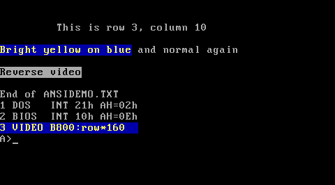

Talking to the hardware: BIOS, ports, interrupts, drivers and consoles
Module 2 (Section 2.7) introduced the interfaces of the device drivers of both systems. This module goes
one level further down: how each system reaches the devices of a PC (keyboard, screen, clock, disk
controller), from the processor instructions that talk to a device up to what a program sees: handles
and the CON device on MS-DOS 4.00, file descriptors, /dev and terminals on FreeBSD 15.1. The second
half is about the console and about time. Five of the seven labs run on the MS-DOS 4.00 we built from
source, with real captured output; the FreeBSD labs use the real 15.1 binaries and manual pages for
static facts and show output captured in the course's FreeBSD 15.1 virtual machine, whose "hardware"
is itself emulated (Section 6.1).
Learning goals. After this module you can:
- name the three ways a PC program reaches a device (I/O ports, device memory in the address space, interrupts), and find the port and vector numbers of the classic PC devices in both source trees;
- explain the three layers of device access on MS-DOS (direct hardware, BIOS services, DOS device
drivers) and trace one character from
INT 21hthrough theCONdriver toINT 10h; - read an MS-DOS device header, request packet and command table, and write a character device driver
that MS-DOS loads with
DEVICE=; - explain how FreeBSD finds devices and binds drivers to them (newbus: buses,
probe,attach,DRIVER_MODULE), how a driver obtains its ports and its interrupt (bus_alloc_resource,bus_space,bus_setup_intr), and how interrupts run as filters and interrupt threads; - compare the MS-DOS console (
CON, cooked and raw mode, Ctrl-C polling,ANSI.SYS) with the FreeBSD terminal (vt, the tty line discipline,termios, signals); - predict what output redirection does to a program that writes through DOS, through the BIOS or into video memory, and argue what a program gains and loses by bypassing the operating system;
- explain how each system keeps time: the BIOS tick count and the
CLOCK$driver on MS-DOS, the real-time clock read once at boot and the timecounters on FreeBSD; - inspect the devices of a running system:
DEBUG, IOCTL calls and a driver-chain walker on MS-DOS;devinfo,sysctl,sttyand the manual pages on FreeBSD.
Prerequisites.
- Module 1: real mode, the BIOS and its data area, the interrupt vector table,
SYSINITandCONFIG.SYS. - Module 2:
INT 21h, handles and the System File Table (Section 2.3), the device driver interface (Section 2.7) and concurrency (Section 2.8). Module 3, Section 3.8: Ctrl-C, signals and process groups. - The lab of Module 0:
tools/dos_run.py, NASM, andtools/dos_tools.pyfor Microsoft C 5.10. Assembly at the level of Module 4.
6.1 The PC as a programmer sees it#
Device memory: the text screen#
A device can make its registers or its buffers appear at memory addresses. The best-known case on a
PC is the text screen. In colour text mode the video adapter shows the 4,000 bytes at segment B800h
(linear 0xB8000): 25 rows of 80 cells, two bytes per cell, the character code followed by an
attribute byte (bits 0-3 the foreground colour, bits 4-6 the background, bit 7 blinking or a bright
background). The cell for row r, column c (counting from 0) is at offset (r * 80 + c) * 2. The
monochrome adapter uses segment B000h instead; ANSI.SYS reads the video mode from the BIOS data area
at 40:49h and picks the segment accordingly (ANSI.ASM lines 790-799).
Nothing else is needed: the adapter reads this memory dozens of times per second to draw the picture,
so a single MOV into B800:xxxx changes the screen. No instruction tells the device that something
happened, and no software sits in between. Lab 6.1 uses this.
I/O ports#
The x86 has a second address space for devices, separate from memory: 65,536 byte-wide I/O ports,
reached only with the IN and OUT instructions (and their string forms INS and OUTS). A port
number up to 255 can be written in the instruction; larger numbers must be in DX. The table lists the
ports this module meets, with the place where each source tree names them.
| Ports | Device | MS-DOS 4.00 | FreeBSD 15.1 |
|---|---|---|---|
20h-21h, A0h-A1h |
two 8259A interrupt controllers | AKPORT, EOI (MSBIO1.ASM lines 135-136) |
IO_ICU1, IO_ICU2 (isareg.h lines 47-50) |
40h-43h |
8254 programmable interval timer | used by the ROM BIOS | hint.attimer.0.port (GENERIC.hints lines 17-19) |
60h, 64h |
8042 keyboard controller | used by the ROM BIOS (INT 09h) |
IO_KBD (isareg.h line 48) |
70h-71h |
MC146818 real-time clock and CMOS memory | CMOS_PORT, CMOS_DATA (CMOSEQU.INC lines 7-8) |
IO_RTC (isareg.h line 49) |
1F0h-1F7h, 3F6h |
AT hard-disk controller | HF_PORT, HF_REG_PORT (MSHARD.ASM lines 26-27) |
ATA drivers, atapci0 in Output 6.13 (source not in our checkout) |
3D8h, 3DAh |
colour adapter mode and status | ANSI.SYS (ANSI.ASM lines 559-575) |
IO_CGA (isareg.h line 54) |
3F8h, 2F8h |
first and second serial port (UART) | used by the ROM BIOS (INT 14h) |
hint.uart.0.port, hint.uart.1.port (GENERIC.hints lines 9-13) |
Many devices use an index/data pair: write a register number to one port, then read or write the register through the next one. The CMOS clock is the classic example, and both systems read it the same way.
MSINIT.ASM lines 2732-2756)Source ↗CMOS_READ PROC NEAR ; READ LOCATION (AL) INTO (AL)
assume es:nothing,ds:nothing
PUSHF ; SAVE INTERRUPT ENABLE STATUS AND FLAGS
;SB33IN4********************************************************************
cli
push bx
push ax ;save user NMI state
or al,NMI ;disable NMI for us
out CMOS_PORT,al
nop ;undocumented delay needed
in al,CMOS_DATA ;get data value
;set NMI state to user specified
mov bx,ax ;save data value
pop ax ;get user NMI
and al,NMI
or al,CMOS_SHUT_DOWN
out CMOS_PORT,al
nop
in al,CMOS_DATA
mov ax,bx ;data value
pop bxatrtc.c lines 98-109)Source ↗static inline u_char
rtcin_locked(int reg)
{
if (rtc_reg != reg) {
inb(0x84);
outb(IO_RTC, reg);
rtc_reg = reg;
inb(0x84);
}
return (inb(IO_RTC + 1));
}Both write the register number to port 70h and read the value from port 71h, and both wait a little
in between because the original chips needed time: MS-DOS with a NOP ("undocumented delay needed"),
FreeBSD with a read of the unused port 84h. Bit 7 of the index disables the non-maskable interrupt,
which is why CMOS_READ saves and restores it. To keep other code away during the pair of accesses, a
one-processor, one-program system needs only CLI; FreeBSD's rtcin() takes the spin mutex
atrtc_lock (atrtc.c lines 125-134), which disables interrupts on this CPU and keeps the
other CPUs out (Module 2, Section 2.8). MS-DOS uses CMOS_READ only to repair the clock's rate
registers on early IBM ATs (CMOSCK, MSINIT.ASM lines 2677-2715); for date and time it uses the BIOS
(Section 6.6).
Interrupts and the 8259#
A device that needs attention raises an interrupt request (IRQ) line. On a PC the lines go to two 8259A programmable interrupt controllers (PICs): IRQ0-7 on the first, IRQ8-15 on the second, which is cascaded through IRQ2. The PIC turns the request into an interrupt with a vector number, and the processor calls the handler in the interrupt vector table (Module 1). Which vector each IRQ uses is fixed by how the BIOS programs the PICs at power-on, and IO.SYS documents the PC/AT assignment in a comment:
MSSTACK.INC lines 3-12)Source ↗; Interrupt level 2, 3, 4, 5, 6, 7,(10, 11, 12, 14, 15 - AT level)
; should follow the standard Interrupt Sharing Scheme which has
; a standard header structure.
; Fyi, the following shows the relations between
; the interrupt vector and interrupt level.
; VEC(Hex) 2 8 9 A B C D E 70 72 73 74 76 77
; LVL(Deci) 9 0 1 2 3 4 5 6 8 10 11 12 14 15
; MSSTACK module modifies the following interrupt vectors
; to meet the standard Interrupt Sharing standard;
; A, B, C, D, E, 72, 73, 74, 76, 77.So IRQ0, the 8254 timer, arrives as INT 08h; IRQ1, the keyboard, as INT 09h; IRQ8, the real-time
clock, as INT 70h; IRQ14, the hard disk, as INT 76h. Vector 2 is the non-maskable interrupt. The
handler must tell the PIC that the interrupt has been served by writing an end of interrupt (EOI)
command, 20h, to port 20h (for IRQ8-15 also to port A0h). IO.SYS does this once, early in its
initialisation, with the comment "TURN ON THE TIMER" (MSINIT.ASM lines 540-542): an EOI left
pending by the boot code would block the timer and everything below it. FreeBSD's PIC driver does
exactly the same OUT:
atpic.c lines 179-188)Source ↗static __inline void
_atpic_eoi_master(struct intsrc *isrc)
{
KASSERT(isrc->is_pic == &atpics[MASTER].at_pic,
("%s: mismatched pic", __func__));
#ifndef AUTO_EOI_1
outb(atpics[MASTER].at_ioaddr, OCW2_EOI);
#endif
}The vector numbers hide a difference. Intel reserves vectors 0-31 for processor exceptions, and on the
80286 and later some PC IRQ vectors collide with them: 08h is the double fault, 0Dh the
general-protection fault. Real-mode DOS can live with that; a protected-mode kernel cannot. FreeBSD keeps
the first 32 entries of its interrupt descriptor table for exceptions and puts device interrupts after
them, at IDT_IO_INTS (segments.h lines 187-213): it reprograms the 8259s to deliver IRQ0
as vector 32 (atpic.c lines 107-110), or, on machines with an I/O APIC that forwards
interrupts to a local APIC in each CPU, masks them and uses vectors from APIC_IO_INTS = 48
(apicvar.h line 90). Figure 6.1 puts the two paths side by side.
Waiting for a device: polling, interrupts and DMA#
A program that has started a device operation can wait in three ways. It can poll: read a status
port in a loop until the device is ready. It can let the device interrupt when it is ready and do
something else meanwhile. And for bulk data it can let a DMA controller copy between the device and
memory without the processor. The PC uses all three, and MS-DOS meets all three in IO.SYS. The routine
that reads hard-disk sectors in MSHARD.ASM polls and copies:
MSHARD.ASM lines 279-298)Source ↗DOC1:
PUSH CS
CALL WAITT ;Wait for controller to complete read
JNZ DOC3
MOV CX, 100h ;256 words per sector
MOV DX, HF_PORT
CLD ;String op goes up
CLI ;Disable interrupts (BUG WAS FORGETTING THIS)
REPZ INSW ;Read in sector
STI
TEST CMD_BLOCK[CMD_REG], 02
JZ DOC2 ;No ECC bytes to read.
PUSH CS
CALL WAIT_DRQ
JC DOC3
MOV CX, 4 ;4 bytes of ECC
MOV DX, HF_PORT
CLI
REPZ INSB ;Read in ECC
STIWAITT ("Wait for disk interrupt") jumps into the AT ROM's own routine, which returns when the disk
interrupt has arrived (MSHARD.ASM lines 353-369); then REP INSW moves the 512-byte sector from the
data port, one word per IN. The comment on CLI names the bug this file fixes in the 1984 IBM AT ROM
(MSHARD.ASM lines 1-15); IO.SYS installs it only when the ROM is dated 01/10/84
(MSINIT.ASM lines 1211-1226, MSINIT.ASM line 307), and it calls into the ROM at fixed addresses
(MSHARD.ASM lines 60-90). DOS shipped patches for particular ROMs.
The floppy disk uses DMA. The PC's 8237 DMA controller counts addresses in 16 bits within a 64 KB page,
so a transfer cannot cross a physical 64 KB boundary. IO.SYS therefore hooks INT 13h and splits any
request whose buffer crosses one, copying the offending sector through its own buffer; the comment calls
it "THE BIGGEST BOGOSITY OF ALL" (MSDISK.ASM lines 1714-1724).
In all three cases the processor running MS-DOS waits: there is nothing else for it to do. A FreeBSD driver programs the transfer, and the thread that asked for the data sleeps until the completion interrupt wakes it; meanwhile the CPU runs other threads (Module 2, Figure 2.5).
How FreeBSD code touches ports#
In the FreeBSD kernel, IN and OUT are wrapped in inline functions, inb() and outb()
(cpufunc.h lines 130-137, cpufunc.h lines 190-194). Most drivers do
not call them directly but go through bus_space, which hides whether a device's registers are ports
or memory:
bus.h lines 213-221)Source ↗static __inline u_int8_t
bus_space_read_1(bus_space_tag_t tag, bus_space_handle_t handle,
bus_size_t offset)
{
if (tag == X86_BUS_SPACE_IO)
return (inb(handle + offset));
return (*(volatile u_int8_t *)(handle + offset));
}The tag says which address space, the handle where the device's registers start; the bus code fills
both when the driver allocates the resource (Section 6.4). The keyboard controller driver reads its
data port with bus_space_read_1 (atkbdc.c lines 73-78); atrtc is older and uses
inb() and outb() directly, although it still allocates its ports so that no other driver can claim
them (atrtc.c lines 481-484).
A user program cannot do either. IN and OUT are privileged in user mode: they raise a
general-protection fault, which the kernel turns into SIGBUS (trap.c lines 441-442).
The one way around it is /dev/io, which its manual page calls "a controlled security hole": a process
running as root that opens it gets I/O privilege (io(4)). On MS-DOS every program has that privilege
all the time. We tried both in the course's virtual machine with a short C program that executes
inb $0x61: run normally it died with "Bus error" (exit status 138, and truss reported
SIGNAL 10 (SIGBUS) code=BUS_OBJERR trapno=9, trap 9 being T_PROTFLT, the general-protection fault,
trap.h line 46); after
opening /dev/io as root, the same instruction returned the port's value.
What DOSBox-X emulates#
DOSBox-X emulates the devices above: the two 8259s, the 8254, the CMOS clock, the keyboard controller,
the serial ports and a VGA adapter with its text memory at B800h. Its BIOS is DOSBox-X's own, not
IBM's, so IBM-specific code paths such as the MSHARD.ASM fix never run, and our floppy image is
reached through DOSBox-X's emulated INT 13h. Timing is not that of a real PC: with cycles=max the
emulated processor runs as fast as the host allows, and delays such as the NOP in Listing 6.1 mean
nothing. The emulated clock also has an opinion of its own about the time of day (Lab 6.2). When a
result depends on such details, the labs say so.
What the course's virtual machine emulates#
The FreeBSD side runs in a Hyper-V "generation 1" virtual machine, which is virtual hardware too, of
two kinds (Lab 6.6 lists them). The first kind imitates a 1998 PC: an Intel 440BX/PIIX4 chipset with
its ISA bridge, the 8259s and an I/O APIC, the 8254, the CMOS clock, an 8042 with a PS/2 keyboard and
mouse, two 16550 serial ports, a floppy controller, IDE and a VGA adapter, at the classic ports and
IRQs of the table above. The second kind are synthetic devices that exist only in a virtual machine
and talk to the hypervisor through shared memory on a bus called VMBus: disk, network, a keyboard, a
mouse, and a clock. Two consequences show up in the labs. The keys typed on the Hyper-V console reach
FreeBSD through the synthetic keyboard hvkbd0, not through IRQ 1 and the 8042, although both drivers
are attached. And every IN or OUT to an emulated chip is intercepted by the hypervisor, which makes
it far slower than on real hardware: a clock_gettime call that reads the 8254 took about 0.1 ms
(Exercise 6.4), so FreeBSD prefers a clock that Hyper-V provides in shared memory (Section 6.6).
6.2 Three layers on MS-DOS#
A program running on MS-DOS 4.00 can reach a device at three levels, and real programs used all three. Figure 6.2 shows them next to the FreeBSD path that Section 6.4 builds up.
| Level | How a program uses it | What it gets | What it gives up |
|---|---|---|---|
| DOS (handles, device names) | INT 21h: write to handle 1, open PRN, read CON |
redirection, device independence, Ctrl-C handling | speed; DOS does one call at a time |
| ROM BIOS | INT 10h, 13h, 14h, 16h, 17h, 1Ah |
independence from the adapter model | redirection; DOS does not know what happened |
| Hardware | IN, OUT, stores into B800h |
full speed and full control | everything else, including compatibility |
The BIOS: a device layer in ROM#
The ROM BIOS of the IBM PC (Module 1) is a set of device drivers reached through software interrupts.
The BIOS directory of the MS-DOS source builds IO.SYS, whose drivers translate DOS requests into
those calls. Its name is historical: IO.SYS was "the DOS BIOS", the part an OEM rewrote for a machine.
The source still carries the names of particular IBM machines, such as the PC Convertible
(MSCON.ASM lines 130-133) and the AT's ROM by date (Section 6.1).
| BIOS call | Service | Called in IO.SYS by |
|---|---|---|
INT 10h, AH=0Eh |
write a character at the cursor ("teletype") | OUTCHR, the INT 29h handler (MSBIO1.ASM lines 584-602) |
INT 13h |
read, write, verify and format disk sectors | the block driver MSDISK.ASM, which also hooks INT 13h (MSDISK.ASM lines 1760-1768) |
INT 14h |
serial port: send, receive, status | AUXOP in the AUX/COMn driver (MSAUX.ASM lines 212-218) |
INT 16h |
keyboard: read a key, test for a key | CHRIN and CON$RDND in the CON driver (Listing 6.9) |
INT 17h |
printer: print a character, status | PRNOP in the PRN/LPTn driver (MSLPT.ASM lines 144-146) |
INT 1Ah |
tick counter; CMOS date and time on ATs | the CLOCK$ driver (Section 6.6) |
INT 15h |
system services (AH=C0h: machine model) |
MSINIT at boot (MSINIT.ASM lines 524-539) |
The drivers in IO.SYS#
Module 2 (Listing 2.28) showed the device header and the request header. IO.SYS contains eleven character devices and one block device, and their headers are plain data, chained one to the next:
MSBDATA.INC lines 181-215)Source ↗ EVENB
PUBLIC CONHEADER
CONHEADER LABEL WORD ;HEADER FOR DEVICE "CON"
DD AUXDEV2
DW 1000000000010011B ;CON IN AND CON OUT + SPECIAL
DW STRATEGY
DW CON$IN
DB 'CON '
EVENB
PUBLIC AUXDEV2
AUXDEV2 LABEL WORD ;HEADER FOR DEVICE "AUX"
DD PRNDEV2
DW 1000000000000000B
DW STRATEGY
DW AUX0$IN
DB 'AUX '
EVENB
PUBLIC PRNDEV2
PRNDEV2 LABEL WORD ;HEADER FOR DEVICE "PRN"
DD TIMDEV
DW CHARDEV + OUTTILBUSY + DEV320
DW STRATEGY
DW PRN0$IN
DB 'PRN '
EVENB
PUBLIC TIMDEV
TIMDEV LABEL WORD
DD DSKDEV
DW 1000000000001000B
DW STRATEGY
DW TIM$IN
DB 'CLOCK$ 'The attribute word says what kind of device each one is (DEVSYM.INC lines 17-34). CON has
1000000000010011B = 8013h: a character device (bit 15) that is the console input (bit 0) and output
(bit 1) and accepts INT 29h output (bit 4, the "special" bit). CLOCK$ has bit 3, the clock device.
AUX is a plain character device. PRN adds output-until-busy (bit 13) and generic IOCTL (bit 6,
DEV320 in DEVSYM.INC lines 81-87; the older table still calls bit 6 unused for character
devices).
The block device after CLOCK$ (DSKDEV, attribute 0842h) serves all the drive letters of the
floppy and hard disks; instead of a name its header holds the number of units
(MSBDATA.INC lines 217-224). Figure 6.3 shows the chain as it is after boot; Lab 6.5 walks it on the
running system.
Every driver has a command table: one byte with the highest command number it accepts, then one near
pointer per command. The table of CON:
MSBDATA.INC lines 66-79)Source ↗ ODD
CONTBL LABEL BYTE
DB 10
DW EXIT
DW EXIT
DW EXIT
DW CMDERR
DW CON$READ
DW CON$RDND
DW EXIT
DW CON$FLSH
DW CON$WRIT
DW CON$WRIT
DW EXIT ;ARR 2.41Commands 0-2 (initialise, media check, build BPB) do nothing for the console: MSINIT has prepared
everything before the first request arrives. Command 3, IOCTL read, is refused (CMDERR), consistent
with bit 14 being clear in the attribute. Command 4 reads, 5 is the non-destructive read that returns
the next character without consuming it, 7 flushes type-ahead, and 8 and 9 (write, write with verify)
both write. The table of CLOCK$ has the same shape, with TIM$READ and TIM$WRIT
(MSBDATA.INC lines 106-118).
All IO.SYS drivers share one strategy routine and one dispatcher; only the small interrupt entry differs:
MSBIO1.ASM lines 321-512)Source ↗ PUBLIC STRATEGY
STRATEGY PROC FAR
MOV WORD PTR CS:[PTRSAV],BX
MOV WORD PTR CS:[PTRSAV+2],ES
RET
STRATEGY ENDP
PUBLIC CON$IN
CON$IN PROC FAR
PUSH SI
MOV SI,OFFSET CONTBL
JMP SHORT ENTRY
CON$IN ENDP
⋮
PUBLIC TIM$IN
TIM$IN PROC FAR
PUSH SI
MOV SI,OFFSET TIMTBL
JMP SHORT ENTRY
TIM$IN ENDP
PUBLIC DSK$IN
DSK$IN PROC FAR
PUSH SI
MOV SI,OFFSET DSKTBL
ENTRY:
PUSH AX
ENTRY1:
PUSH CX
PUSH DX
PUSH DI
PUSH BP
PUSH DS
PUSH ES
⋮
XCHG DI,AX
MOV AL,BYTE PTR DS:[BX].CMD
CMP AL,CS:[SI] ;ARR 2.41
JA CMDERR
CBW ; NOTE THAT AL <= 15 MEANS OK
SHL AX,1
ADD SI,AX
XCHG AX,DI
LES DI,DWORD PTR DS:[BX].TRANS
PUSH CS
POP DS
ASSUME DS:CODE
CLD
JMP WORD PTR [SI+1] ;GO DO COMMANDThe strategy routine stores the packet address in PTRSAV. Each interrupt entry loads the address of
its command table into SI and joins ENTRY, which saves the registers, loads ES:DI and CX from
the packet, checks the command number against the table's first byte, and jumps to the handler. Every
handler ends at EXIT or one of its neighbours, which store AX as the status word with the high byte
01h (done), 81h (error and done, error code in AL) or 03h (busy and done) when, for example, a
non-destructive read finds no key; without an error the low byte is whatever AL held and means nothing
(MSBIO1.ASM lines 524-573). AUX and COM1 even share the interrupt entry AUX0$IN
(MSBDATA.INC lines 192-197, MSBDATA.INC lines 254-259).
The CON driver: INT 16h in, INT 10h out#
The console read handler is a loop around one BIOS call:
MSCON.ASM lines 37-90)Source ↗; CONSOLE READ ROUTINE
;
ASSUME DS:CODE ; THIS WAS SET BY THE CON DD ENTRY POINT
PUBLIC CON$READ
CON$READ PROC NEAR
JCXZ CON$EXIT
CON$LOOP:
CALL CHRIN ;GET CHAR IN AL
STOSB ;STORE CHAR AT ES:DI
LOOP CON$LOOP
CON$EXIT:
JUMP EXIT
⋮
CHRIN PROC NEAR
;AN000;
; XOR AX,AX
mov ah,KEYRD_Func ;AN000; Set by MSINIT. 0 or 10h
xor al,al ;AN000;
XCHG AL,ALTAH ;GET CHARACTER & ZERO ALTAH
OR AL,AL
JNZ KEYRET
;SB34CON000**************************************************************
;SB Keyboard I/O interrupt
;SB AH already contains the keyboard read function number
;SB 1 LOC
int 16h
;SB34CON000**************************************************************
ALT10:
OR AX,AX ;CHECK FOR NON-KEY AFTER BREAK
JZ CHRIN
CMP AX,7200H ;CHECK FOR CTRL-PRTSC
JNZ ALT_Ext_Chk ;AN000;CON$READ stores CX characters at ES:DI, each from CHRIN. CHRIN calls INT 16h with function
00h, or 10h when MSINIT found an enhanced keyboard (bit 4 of the BIOS byte at 40:96h,
MSINIT.ASM lines 752-766). The BIOS returns the ASCII code in AL and the keyboard's scan code in
AH. For keys without an ASCII code (function keys, arrows) AL is 0; CHRIN returns that 0 and
keeps the scan code in ALTAH, to be returned by the next call. That is where the two-byte "extended
key" codes of MS-DOS programs come from. The non-destructive read CON$RDND uses INT 16h function
01h (or 11h), which reports whether a key is waiting without removing it
(MSCON.ASM lines 146-161).
The write handler does not call the video BIOS itself. It sends each character through INT 29h:
MSCON.ASM lines 250-266)Source ↗ ASSUME DS:CODE ; THIS WAS SET BY THE CON DD ENTRY POINT
PUBLIC CON$WRIT
CON$WRIT:
JCXZ EXVEC
CON$LP:
MOV AL,ES:[DI] ;GET CHAR
INC DI
INT CHROUT ;OUTPUT CHAR
LOOP CON$LP ;REPEAT UNTIL ALL THROUGH
JUMP EXIT
;-----------------------------------------------
;
; BREAK KEY HANDLING
;
PUBLIC CBREAK
CBREAK:
MOV CS:ALTAH,3 ;INDICATE BREAK KEY SETMSINIT points vector 29h at OUTCHR, which calls INT 10h function 0Eh with attribute 7
(MSBIO1.ASM lines 575-602), and vector 1Bh, which the ROM BIOS calls when the user presses
Ctrl-Break, at CBREAK (MSINIT.ASM lines 590-605). CBREAK does not interrupt anything: it
stores 3, the code of Ctrl-C, in ALTAH, so the next console read returns a Ctrl-C character and DOS
treats it like a typed one.
Why the indirection through INT 29h? Because DOS uses it too, as a fast path that skips the request
packet altogether:
CPMIO.ASM lines 341-382)Source ↗ entry RAWOUT
PUSH BX
MOV BX,1
invoke GET_IO_SFT
JC RAWRET1
MOV BX,[SI.sf_flags]
;
; If we are a network handle OR if we are not a local device then go do the
; output the hard way.
;
AND BX,sf_isNet + devid_device
CMP BX,devid_device
JNZ RawNorm
⋮
PUSH DS
LDS BX,[SI.sf_devptr] ; output to special?
TEST BYTE PTR [BX+SDEVATT],ISSPEC
POP DS
JZ RAWNORM ; if not, do normally
INT int_fastcon ; quickly output the char
RAWRET:
CLC
RAWRET1:
POP BX
return
RAWNORM:
CALL RAWOUT3
JMP RAWRETRAWOUT writes the character in AL to standard output. If handle 1 is a local character device with
the special bit set, it simply executes INT 29h (int_fastcon); only otherwise does it go through
RAWOUT3 and IOFUNC, which builds a request packet and calls the driver with DEVIOCALL (Module 2,
Listing 2.29), or writes to the file when standard output is redirected to one. The console output of functions 01h-0Ch, echo included, and cooked handle writes to
CON (DISK.ASM lines 656-676) end in RAWOUT. A console that wants to see the characters DOS writes must
therefore own vector 29h, which is exactly what ANSI.SYS arranges.
An installable driver: ANSI.SYS#
Our CONFIG.SYS contains DEVICE=\ANSI.SYS. ANSI.SYS replaces the console with one that interprets
the escape sequences of the ANSI X3.64 standard, the same family a VT100 terminal and FreeBSD's
console understand: ESC [ 2 J clears the screen, ESC [ row ; col H moves the cursor, ESC [ 1 ; 33 ; 44 m selects bright yellow on blue. Its header claims the name CON:
ANSI.ASM lines 93-98)Source ↗CONDEV: ;HEADER FOR DEVICE "CON"
DW -1,-1
DW 1100000001010011B ;WGR changed to match CON ;AC000;
DW STRATEGY
DW ENTRY
DB 'CON 'The attribute C053h is the IO.SYS console's 8013h plus IOCTL strings (bit 14) and generic IOCTL
(bit 6), which MODE uses to change the number of screen lines. The link field is -1; SYSINIT
fills it when it links the driver into the chain. While processing DEVICE=, SYSINIT also checks two
attribute bits:
SYSCONF.ASM lines 1540-1560)Source ↗BREAKOK:
LDS DX,[ENTRY_POINT] ;SET DS:DX TO HEADER
MOV SI,DX
ADD SI,SDEVATT ;DS:SI POINTS TO ATTRIBUTES
LES DI,CS:[DOSINFO] ;ES:DI POINT TO DOS INFO
MOV AX,DS:[SI] ;GET ATTRIBUTES
TEST AX,DEVTYP ;TEST IF BLOCK DEV
JZ ISBLOCK
or cs:[SetDevMarkFlag],FOR_DEVMARK ;AN004;
invoke Set_Break ; Go ahead and alloc mem for device
jc Erase_Dev_do ;device driver's Init routien failed.
TEST AX,ISCIN ;IS IT A CONSOLE IN?
JZ TRYCLK
MOV WORD PTR ES:[DI.SYSI_CON],DX
MOV WORD PTR ES:[DI.SYSI_CON+2],DS
TRYCLK: TEST AX,ISCLOCK ;IS IT A CLOCK DEVICE?
JZ GOLINK
MOV WORD PTR ES:[DI+SYSI_CLOCK],DX
MOV WORD PTR ES:[DI+SYSI_CLOCK+2],DS
GOLINK: JMP LINKITSYSI_CON and SYSI_CLOCK are the BCON and BCLOCK pointers in the List of Lists
(MSCONST.ASM lines 67-71); DOS sends its console status checks and its date and time requests
straight to them. LINKIT then inserts the new header right after NUL, ahead of the drivers in
IO.SYS, so when a program opens CON the name search finds ANSI.SYS first. The IO.SYS console stays
in the chain, unreachable by name. Its initialisation entry then takes over the two vectors that
matter:
ANSIINIT.ASM lines 107-121)Source ↗setbrk:
XOR BX,BX
MOV DS,BX
MOV BX,BRKADR
MOV WORD PTR [BX],OFFSET BRKKY
MOV WORD PTR [BX+2],CS
MOV BX,29H*4
MOV WORD PTR [BX],OFFSET COUT
MOV WORD PTR [BX+2],CS
LDS BX,CS:[PTRSAV]
MOV WORD PTR [BX].TRANS,OFFSET CON$INIT ;SET BREAK ADDRESS
MOV [BX].TRANS+2,CS
JMP EXITThe last three instructions set the break address in the packet to CON$INIT, the first byte of the
initialisation code: SYSINIT keeps only the memory below it, so the code that ran once is given back.
The escape-sequence parser is a state machine. The variable STATE holds the address of the code for
the current state, and every character jumps there:
ANSI.ASM lines 831-919)Source ↗VIDEO: MOV SI,OFFSET STATE
JMP [SI]
S2: CMP AL,'['
JZ S22
JMP S1
S22: MOV WORD PTR [SI],OFFSET S3
XOR BX,BX
MOV WORD PTR INQ,BX
JMP SHORT S3B
⋮
S7: MOV BX,OFFSET CMDTABL-3
;
S7A: ADD BX,3
CMP BYTE PTR [BX],0
JZ S1B
CMP BYTE PTR [BX],AL
JNZ S7A
⋮
S1: CMP AL,ESC_CHAR ;ESCAPE SEQUENCE?
JNZ S1B
MOV WORD PTR [SI],OFFSET S2
RET
S1B: CALL CHROUT
S1A: MOV WORD PTR [STATE],OFFSET S1
RETIn state S1 an ordinary character goes to CHROUT, which writes it with the BIOS or, for scrolling,
moves video memory itself (ANSI.ASM lines 422-545); ESC moves to S2. A [ in S2 starts
a sequence: S3 collects decimal parameters separated by ; into a buffer, and the first character
that is not part of a parameter is looked up in CMDTABL (ANSI.ASM lines 126-160): A-D move
the cursor, H and f position it, J and K erase, m sets colours, s and u save and restore
the cursor. Two commands work in the other direction, and Lab 6.4 tries both. ESC [ 6 n makes the
driver queue a cursor-position report, ESC [ row ; col R, as if it had been typed
(ANSI.ASM lines 1045-1060); and ESC [ code ; "string" p reassigns a key, so that pressing it
types the string from then on (KEYASN, ANSI.ASM lines 1091-1132).
COMMAND.COM knows about ANSI.SYS. Its CLS asks through INT 2Fh whether the driver is installed,
and if it is, clears the screen by writing ESC [ 2 J to standard output; otherwise, when standard
output is the console, it scrolls the window with INT 10h (TCMD2A.ASM lines 401-433).
6.3 Programs that bypass DOS#
Many MS-DOS programs of the 1980s wrote into video memory, read the keyboard through the BIOS or the
keyboard controller, and reprogrammed the timer. The reason was speed. Through DOS, one character passes
the dispatcher and its stack switch (Module 2), a Ctrl-C check on every 64th character (OUTT,
CPMIO2.ASM lines 104-121), RAWOUT, INT 29h and INT 10h function 0Eh, whose ROM code computes the
cell address, stores the character and moves the cursor. A program that owns the screen copies 4,000
bytes into B800h with one REP MOVSW. On a 4.77 MHz 8088 that decided whether an editor felt instant.
Similar shortcuts existed for every device: INT 16h gives scan codes and shift states that DOS does not
pass on; a game that must know when a key is released replaces INT 09h and reads port 60h; a
program that needs a faster tick reprograms channel 0 of the 8254 and must then call the old INT 08h
only on every nth interrupt. Even ANSI.SYS scrolls by moving video memory, waiting for the vertical
retrace on the original colour adapter to avoid "snow" (ANSI.ASM lines 547-581).
Shared vectors were fragile, as the revision history of IO.SYS records:
MSBIO1.ASM lines 79-89)Source ↗; REV 2.1 5/1/83 ARR ADDED TIMER INT HANDLER AND CHANGED ORDER OF AUX
; PRN INIT FOR HAL0
;
; REV 2.15 7/13/83 ARR BECAUSE IBM IS FUNDAMENTALY BRAIN DAMAGED, AND
; BASCOM IS RUDE ABOUT THE 1CH TIMER INTERRUPT, THE TIMER
; HANDLER HAS TO GO BACK OUT!!!!! IBM SEEMS UNWILLING TO
; BELIEVE THE PROBLEM IS WITH THE BASCOM RUNTIME, NOT THE
; DOS. THEY HAVE EVEN BEEN GIVEN A PATCH FOR BASCOM!!!!!
; THE CORRECT CODE IS COMMENTED OUT AND HAS AN ARR 2.15
; ANNOTATION. THIS MEANS THE BIOS WILL GO BACK TO THE
; MULTIPLE ROLL OVER BUG.The compiled-BASIC runtime took over INT 1Ch without calling the previous handler, so IO.SYS's handler,
which counted midnight crossings, stopped running; IO.SYS gave up and accepted the "multiple roll over
bug" (Section 6.6). With nobody in control of the vectors, the last program to install itself wins.
The consequences of bypassing DOS are visible in the labs:
- No redirection. Output written with
INT 10hor intoB800hnever passes through a handle, so it cannot be redirected, piped or captured (Lab 6.1). - No device independence. A program that writes to
B800hshows nothing on a monochrome adapter or in a graphics mode, and nobody else knows the screen changed: the cursor stays where it was. - No arbitration. Nothing stops two programs from driving the same device; the only protocol is to chain to the previous vector (Module 2, Exercise 2.5) and hope everyone else does too.
- A wall for later systems. Any system that wanted to run such programs under protection had to
emulate the hardware. MS-DOS 4.00 contains an example:
EMM386runs DOS in virtual-8086 mode and installs I/O trap handlers for the keyboard controller ports, to watch programs switch the A20 address line (A20TRAP.ASMlines 5-38), and for the DMA controller, because a program gives a linear address and the chip needs a physical one (ELIMTRAP.ASMlines 40-58).
On FreeBSD a user program cannot take these shortcuts: IN and OUT fault, the interrupt table and video
memory are not in its address space, and devices are reached only through files in /dev. The kernel
offers controlled exceptions with permission checks: /dev/io, mmap(2) of the console's video memory
through its terminal (subr_terminal.c lines 491-498), and a raw keyboard mode that delivers scan
codes (Exercise 6.3). The price of protection was paid once, by writing drivers; the price of the MS-DOS
freedom was paid by every later system that had to stay compatible with it.
6.4 FreeBSD: buses, drivers and resources#
After the loader has handed over (Module 1), the FreeBSD kernel never calls the BIOS again: it runs in long mode, where real-mode ROM code cannot run, and on many machines there is no BIOS at all. The kernel must therefore find the devices itself and drive them with its own code. The framework for this is called newbus.
A tree of devices#
Every device the kernel knows is a device_t, a node in a tree. The root is nexus, which represents
the processor's view of the machine. Under it are buses: acpi, which reads the ACPI tables the
firmware provides; pci, which enumerates the PCI configuration space; isa, for the legacy devices
of the PC. A bus driver's job is to find its children and their resources (port ranges, memory
ranges, interrupt lines); every other driver attaches to a device found by a bus. Figure 6.4 shows the
part of the tree this module uses.
Modern devices describe themselves: a PCI device has vendor and device identifiers in its configuration
space, an ACPI device has a Plug and Play identifier such as PNP0B00 for the real-time clock
(atrtc.c lines 410-413). For the old ISA devices that cannot be detected safely, the kernel
reads hints, the closest FreeBSD relative of CONFIG.SYS's device lines. The hints of the GENERIC
kernel are the numbers of Section 6.1: hint.atkbdc.0.port="0x060", hint.atkbd.0.irq="1",
hint.atrtc.0.port="0x70", hint.atrtc.0.irq="8", hint.attimer.0.irq="0", hint.uart.0.port="0x3F8"
(GENERIC.hints lines 1-19).
Probe and attach#
A driver is a table of methods, a name and the size of its private data (its softc); one macro registers it with a bus:
atrtc.c lines 638-683)Source ↗static device_method_t atrtc_isa_methods[] = {
/* Device interface */
DEVMETHOD(device_probe, atrtc_probe),
DEVMETHOD(device_attach, atrtc_isa_attach),
/* XXX stop statclock? */
DEVMETHOD(device_resume, atrtc_resume),
/* clock interface */
DEVMETHOD(clock_gettime, atrtc_gettime),
DEVMETHOD(clock_settime, atrtc_settime),
{ 0, 0 }
};
static driver_t atrtc_isa_driver = {
"atrtc",
atrtc_isa_methods,
sizeof(struct atrtc_softc),
};
⋮
DRIVER_MODULE(atrtc, isa, atrtc_isa_driver, 0, 0);
#ifdef DEV_ACPI
DRIVER_MODULE(atrtc, acpi, atrtc_acpi_driver, 0, 0);
#endif
ISA_PNP_INFO(atrtc_ids);DEVMETHOD is KOBJMETHOD (bus.h lines 868-872): newbus is built on kobj, a small object
system in C in which an interface (device_if, clock_if) is a set of named methods.
DRIVER_MODULE(atrtc, isa, ...) declares a module whose event handler adds the driver to the isa bus
at boot or when the module is loaded (bus.h lines 887-926). The MS-DOS equivalents are the device
header and the command table (Listings 6.7 and 6.8). The difference is who decides: MS-DOS loads every
DEVICE= driver it is told to and lets the driver find out whether its hardware is there; FreeBSD
offers each device found by a bus to every driver registered for that bus and lets them bid:
subr_bus.c lines 1732-1783)Source ↗ result = DEVICE_PROBE(child);
/*
* If probe returns 0, this is the driver that wins this
* device.
*/
if (result == 0) {
best = dl;
pri = 0;
goto exact_match; /* C doesn't have break 2 */
}
⋮
/*
* A priority lower than SUCCESS, remember the
* best matching driver. Initialise the value
* of pri for the first match.
*/
if (best == NULL || result > pri) {
best = dl;
pri = result;
continue;
}A probe method returns 0 for "this device is mine", a positive error such as ENXIO for "not mine",
or a negative bid: BUS_PROBE_DEFAULT (-20) for the normal driver, BUS_PROBE_LOW_PRIORITY (-40) for a
fallback, BUS_PROBE_GENERIC (-100) for a generic driver that a specific one should beat
(bus.h lines 819-825). atrtc_probe returns 0 when ACPI describes a PNP0B00 device, and
BUS_PROBE_LOW_PRIORITY when the device comes only from a hint (atrtc.c lines 454-471).
device_probe_and_attach then calls the winner's attach method (subr_bus.c lines 2566-2580,
subr_bus.c line 2630), which is where the driver takes its resources:
atrtc.c lines 473-507)Source ↗static int
atrtc_attach(device_t dev)
{
struct atrtc_softc *sc;
rman_res_t s;
int i;
sc = device_get_softc(dev);
sc->port_res = bus_alloc_resource(dev, SYS_RES_IOPORT, &sc->port_rid,
IO_RTC, IO_RTC + 1, 2, RF_ACTIVE);
if (sc->port_res == NULL)
device_printf(dev, "Warning: Couldn't map I/O.\n");
atrtc_start();
clock_register(dev, 1000000);
bzero(&sc->et, sizeof(struct eventtimer));
if (!atrtcclock_disable &&
(resource_int_value(device_get_name(dev), device_get_unit(dev),
"clock", &i) != 0 || i != 0)) {
sc->intr_rid = 0;
while (bus_get_resource(dev, SYS_RES_IRQ, sc->intr_rid,
&s, NULL) == 0 && s != 8)
sc->intr_rid++;
sc->intr_res = bus_alloc_resource(dev, SYS_RES_IRQ,
&sc->intr_rid, 8, 8, 1, RF_ACTIVE);
if (sc->intr_res == NULL) {
device_printf(dev, "Can't map interrupt.\n");
return (0);
} else if ((bus_setup_intr(dev, sc->intr_res, INTR_TYPE_CLK,
rtc_intr, NULL, sc, &sc->intr_handler))) {
device_printf(dev, "Can't setup interrupt.\n");
return (0);
} else {
/* Bind IRQ to BSP to avoid live migration. */
bus_bind_intr(dev, sc->intr_res, 0);
}bus_alloc_resource asks the parent bus for the two ports; the bus's resource manager (rman(9))
refuses if another driver already holds them, which is how FreeBSD avoids the "two programs drive the
same device" problem of Section 6.3. clock_register adds the device to the list of time-of-day
clocks (Section 6.6). Then the driver allocates IRQ8 and installs its interrupt handler with
bus_setup_intr.
Interrupt filters and interrupt threads#
bus_setup_intr takes two functions, and a driver supplies one or both
(bus.h lines 213-251). A filter runs immediately, in interrupt context on the interrupted CPU,
and may not sleep or take an ordinary mutex; it returns FILTER_HANDLED, FILTER_STRAY (not my device)
or FILTER_SCHEDULE_THREAD. A handler runs later in an interrupt thread (ithread), a kernel thread
with a high priority that may take ordinary mutexes. atrtc passes the filter rtc_intr, which only
acknowledges the chip and calls the event-timer callback (atrtc.c lines 252-264); the AT
keyboard passes no filter and the handler atkbdintr (atkbd_atkbdc.c lines 128-138). When
the interrupt arrives, the machine-dependent code calls intr_event_handle:
kern_intr.c lines 1384-1451)Source ↗ CK_SLIST_FOREACH(ih, &ie->ie_handlers, ih_next) {
if ((ih->ih_flags & IH_SUSP) != 0)
continue;
if ((ie->ie_flags & IE_SOFT) != 0 && ih->ih_need == 0)
continue;
if (ih->ih_filter == NULL) {
thread = true;
continue;
}
CTR4(KTR_INTR, "%s: exec %p(%p) for %s", __func__,
ih->ih_filter, ih->ih_argument, ih->ih_name);
ret = ih->ih_filter(ih->ih_argument);
⋮
if (thread) {
if (ie->ie_pre_ithread != NULL)
ie->ie_pre_ithread(ie->ie_source);
} else {
if (ie->ie_post_filter != NULL)
ie->ie_post_filter(ie->ie_source);
}
/* Schedule the ithread if needed. */
if (thread) {
int error __unused;
error = intr_event_schedule_thread(ie, frame);
KASSERT(error == 0, ("bad stray interrupt"));
}Filters run in a loop over the handlers sharing the line. A handler without a filter only marks that the
thread is needed; intr_event_schedule_thread makes the ithread runnable. On x86 the hooks of the event
send the EOI before the thread is scheduled (ie_pre_ithread) and, for a level-triggered source, mask it
first and unmask it after the thread has run; when filters handled everything they only send the EOI
(intr_machdep.c lines 229-231, intr_machdep.c lines 309-316). The I/O APIC and 8259 drivers
leave an edge-triggered line such as IRQ1 unmasked (io_apic.c lines 283-301, atpic.c lines 259-268). The thread itself, ithread_loop, runs all the handlers
while there is work and then switches away until the next interrupt (kern_intr.c lines 1243-1328).
Figure 6.1 shows the whole path.
| MS-DOS 4.00 | FreeBSD 15.1 | |
|---|---|---|
| Who installs a handler | any program, by writing a vector | a driver, through bus_setup_intr |
| Where the handler runs | on the interrupted stack, or one of the STACKS= pool (MSSTACK.INC lines 20-31) |
a filter in interrupt context; a handler in its own thread |
| Sharing a line | chain to the previous vector | a list of handlers per interrupt event |
| End of interrupt | each handler writes port 20h |
the PIC or APIC driver, after the filters and before any thread runs |
| May it block? | no; it must not even call DOS | filter: no; thread: may take mutexes, not sleep |
| Visible to the user | DEBUG: the vector table |
vmstat -i: counts per source; procstat -t: the intr threads |
Devices in /dev#
Drivers that user programs talk to create character devices: a struct cdevsw with one function per
operation (Module 2, Listing 2.30), and a call to make_dev (or make_dev_s) that gives the device a
name. The terminal code, for example, creates /dev/ttyv0 this way and, for a serial line whose driver
asks for them, the .init and .lock companions (/dev/ttyu0.init, /dev/ttyu0.lock) and the call-out
device /dev/cuau0 (tty.c lines 1372-1471). The node appears at once in
devfs, the file system mounted on /dev, and disappears when the driver calls destroy_dev; there is
no mknod and there are no fixed device numbers (devfs(4)). On MS-DOS a device name is valid in every
directory, with or without an extension, so COPY FILE CON.TXT writes to the screen; on FreeBSD a
device is an ordinary path, subject to ordinary permissions.
6.5 Consoles: CON and the terminal#
The console is the device every program uses first and most. Both systems put a layer between the
keyboard and screen drivers and the program: on MS-DOS the console code in the kernel and the CON
driver, on FreeBSD the terminal (tty) layer and its line discipline. Figure 6.5 sets them side by
side.
Handles 0, 1 and 2 on MS-DOS#
SYSINIT creates the standard handles before it starts COMMAND.COM: it opens CON once and
duplicates that handle to 1 and 2 with XDUP (SYSINIT1.ASM lines 1511-1530). So handles 0, 1 and 2 refer to the same System File Table entry (Module 2, Section 2.3), and so do
the copies every program inherits. Handles 3 and 4 are AUX and PRN. The sharing matters because the
console's mode is a property of the SFT entry, not of the handle: Lab 6.3 switches handle 0 to raw mode
and sees handle 2 change with it. CTTY COM1 works the same way in reverse: COMMAND.COM opens the new
device, sets the console-input and console-output bits in its device information, and duplicates it to
handles 0, 1 and 2 (TCMD2B.ASM lines 134-188), which gives a remote console over a serial
line.
Device information, cooked and raw#
IOCTL function 4400h returns the device information word of a handle, and 4401h sets its low byte.
For a device the bits are:
SF.INC lines 131-152)Source ↗; structure of devid field as returned by IOCTL is:
;
; BIT 7 6 5 4 3 2 1 0
; |---|---|---|---|---|---|---|---|
; | I | E | R | S | I | I | I | I |
; | S | O | A | P | S | S | S | S |
; | D | F | W | E | C | N | C | C |
; | E | | | C | L | U | O | I |
; | V | | | L | K | L | T | N |
; |---|---|---|---|---|---|---|---|
; ISDEV = 1 if this channel is a device
; = 0 if this channel is a disk file
;
; If ISDEV = 1
;
; EOF = 0 if End Of File on input
; RAW = 1 if this device is in Raw mode
; = 0 if this device is cooked
; ISCLK = 1 if this device is the clock device
; ISNUL = 1 if this device is the null device
; ISCOT = 1 if this device is the console output
; ISCIN = 1 if this device is the console inputThe low byte lives in sf_flags of the SFT entry; for a device, 4400h puts the high byte of the
driver's attribute word into DH (IOCTL.ASM lines 292-304). 4401h lets a program change the low byte
of a device's entry (but never clear the "is a device" bit), and does nothing for a file
(IOCTL.ASM lines 275-286). Only one bit is meant to be changed: bit 5, raw. Every read from a device
looks at it:
DISK.ASM lines 239-248)Source ↗;
; We need to hit the device. Figure out if we do a raw read or we do the
; bizarre std_con_string_input.
;
TESTRAW:
TEST BL,devid_device_raw ; Raw mode?
JNZ DVRDRAW ; Yes, let the device do all local editing
TEST BL,devid_device_con_in ; Is it console device?
JZ NOTRDCON
JMP READCONIn raw mode DOS builds one read request for the full count and passes it to the driver
(DISK.ASM lines 250-276); the CON driver then calls INT 16h that many times (Listing 6.10). No
echo, no editing, no special characters: Ctrl-C, Ctrl-S and Ctrl-Z arrive as bytes 03h, 13h and
1Ah. In cooked mode a read from the console calls READCON, which uses the line editor of function
0Ah (DISK.ASM lines 389-416). The editor echoes, handles Backspace, the F1-F5 template keys and
Esc, and returns when the user presses Enter; READCON appends a line feed to the carriage return and
treats a line that starts with Ctrl-Z as end of file. A cooked read from any other character device
reads one byte at a time and stops after a carriage return or Ctrl-Z (DISK.ASM lines 295-355); a cooked
write stops at Ctrl-Z (DISK.ASM lines 601-650). This is also why COPY reads devices only in
"ASCII" mode, a fact Exercise 6.1 runs into.
One more detail matters for Lab 6.3: during a cooked console read, DOS sends the echo to the device it is
reading from, not to standard output. READCON calls SWAPCON, which makes handles 0 and 1 refer to the
console's SFT entry for the duration of the read (DISK.ASM lines 105-122,
DISK.ASM lines 679-708). Redirect standard output to a file and the echo still appears on the screen.
Ctrl-C is polled#
MS-DOS has no interrupt-driven way to deliver Ctrl-C. Instead the kernel looks for it, at fixed points, by asking the console driver for the next waiting character without removing it:
CTRLC.ASM lines 94-144)Source ↗ procedure DSKSTATCHK,NEAR ; Check for ^C if only one level in
CMP BYTE PTR [INDOS],1
retnz ; Do NOTHING
⋮
MOV BYTE PTR [DSKSTCOM],DEVRDND
MOV BYTE PTR [DSKSTCALL],DRDNDHL
MOV [DSKSTST],0
IF DBCS ;AN000;
MOV AL, [InterCon] ;AN000;get type of status read 2/13/KK
MOV BYTE PTR [DSKCHRET],AL ;AN000; load interim flag into packet
ENDIF ;AN000;
MOV BX,OFFSET DOSGROUP:DSKSTCALL
LDS SI,[BCON]
ASSUME DS:NOTHING
invoke DEVIOCALL2
TEST [DSKSTST],STBUI
JZ GotCh ; No characters available
⋮
GotCh:
MOV AL,BYTE PTR [DSKCHRET]
DSK1:
CMP AL,"C"-"@"
JNZ RET36
MOV BYTE PTR [DSKSTCOM],DEVRD
MOV BYTE PTR [DSKSTCALL],DRDWRHL
MOV BYTE PTR [DSKCHRET],CL
MOV [DSKSTST],0
MOV [DSKSTCNT],1
invoke DEVIOCALL2 ; Eat the ^C
POP SI
POP DS
POP BX ; Clean stack
POP ES
POP CX
JMP CNTCHANDDSKSTATCHK sends a non-destructive read (command 5) to BCON, the console device, not to standard
input. If the waiting character is Ctrl-C, it reads it and jumps to CNTCHAND, which prints ^C and
issues INT 23h (Module 3, Section 3.8). The kernel calls it on every character of cooked I/O to a
character device (the loops in DOS_READ and DOS_WRITE above), every 64th character of console output
(OUTT calls STATCHK, which also handles Ctrl-S and Ctrl-P), during the console functions 01h-0Ch,
and before every other system call when BREAK=ON (Module 3, Section 3.8). Two consequences follow, and
Lab 6.3 meets both. First, setting standard input to raw does not switch the polling off: a program that
writes to a cooked device still has its console peeked. Second, Ctrl-C is noticed only when the program
calls DOS. A program in a tight loop that never calls DOS cannot be interrupted, except through
Ctrl-Break, whose BIOS hook CBREAK (Listing 6.11) only queues a Ctrl-C for the next poll.
FreeBSD: vt and the terminal layer#
FreeBSD's console is vt(4): several virtual terminals (/dev/ttyv0, /dev/ttyv1…) share screen and
keyboard, switched with Alt-F1, Alt-F2. Keys reach vt_kbdevent through the keyboard layer and the
multiplexer kbdmux(4) (Study case 6.A). Output goes through termtty_outwakeup to teken, the
terminal emulator that interprets escape sequences much as ANSI.SYS does
(subr_terminal.c lines 410-434); unlike ANSI.SYS it is always there, and ESC [ 2 J clears a
vt console, an xterm and an MS-DOS screen with ANSI.SYS alike.
A struct tty may belong to a console window, a serial port (uart(4), /dev/ttyu0) or a
pseudo-terminal; the same line discipline, tty_ttydisc.c, processes the characters of all of them.
ttydisc_rint applies the terminal's termios settings to each received character: input flags
(ISTRIP, IXON, ICRNL), then signal characters if ISIG is set (VINTR to SIGINT, Module 3),
then line editing if ICANON is set:
tty_ttydisc.c lines 1175-1251)Source ↗ /* Canonical line editing. */
if (CMP_FLAG(l, ICANON)) {
if (CMP_CC(VERASE, c) || CMP_CC(VERASE2, c)) {
ttydisc_rubchar(tp);
return (0);
} else if (CMP_CC(VKILL, c)) {
while (ttydisc_rubchar(tp) == 0);
return (0);
} else if (CMP_FLAG(l, IEXTEN)) {
if (CMP_CC(VWERASE, c)) {
ttydisc_rubword(tp);
return (0);
} else if (CMP_CC(VREPRINT, c)) {
ttydisc_reprint(tp);
return (0);
}
}
}
⋮
/*
* In raw mode, we canonicalize after receiving a single
* character. Otherwise, we canonicalize when we receive a
* newline, VEOL or VEOF, but only when it isn't quoted.
*/
if (!CMP_FLAG(l, ICANON) ||
(!quote && (c == CNL || CMP_CC(VEOL, c) || CMP_CC(VEOF, c)))) {
ttyinq_canonicalize(&tp->t_inq);
}
ttydisc_echo(tp, c, quote);
return (0);Characters go into the input queue as they arrive, but in canonical mode read(2) can see them only
after ttyinq_canonicalize has been called, at a newline, VEOL or VEOF; in raw mode every character
is canonicalised at once. The read side picks one of four strategies:
tty_ttydisc.c lines 408-426)Source ↗int
ttydisc_read(struct tty *tp, struct uio *uio, int ioflag)
{
int error;
tty_assert_locked(tp);
if (uio->uio_resid == 0)
return (0);
if (CMP_FLAG(l, ICANON))
error = ttydisc_read_canonical(tp, uio, ioflag);
else if (tp->t_termios.c_cc[VTIME] == 0)
error = ttydisc_read_raw_no_timer(tp, uio, ioflag);
else if (tp->t_termios.c_cc[VMIN] == 0)
error = ttydisc_read_raw_read_timer(tp, uio, ioflag,
uio->uio_resid);
else
error = ttydisc_read_raw_interbyte_timer(tp, uio, ioflag);In canonical mode read returns at most one line. In non-canonical mode VMIN and VTIME decide: with
VTIME zero, read waits until VMIN bytes are available; with VMIN zero, VTIME (in tenths of a
second) is a time-out; with both set, VTIME is an inter-byte timer (termios(4)). MS-DOS raw mode has
none of this: a raw read of n bytes from CON waits for exactly n keys. A terminal starts with the
defaults of ttydefaults.h:
ttydefaults.h lines 46-53)Source ↗#define TTYDEF_IFLAG (BRKINT | ICRNL | IMAXBEL | IXON | IXANY | IUTF8)
#define TTYDEF_OFLAG (OPOST | ONLCR)
#define TTYDEF_LFLAG_NOECHO (ICANON | ISIG | IEXTEN)
#define TTYDEF_LFLAG_ECHO (TTYDEF_LFLAG_NOECHO \
| ECHO | ECHOE | ECHOKE | ECHOCTL)
#define TTYDEF_LFLAG TTYDEF_LFLAG_ECHO
#define TTYDEF_CFLAG (CREAD | CS8 | HUPCL)
#define TTYDEF_SPEED (B9600)The control characters default to the familiar keys: VINTR Ctrl-C, VQUIT Ctrl-\, VSUSP Ctrl-Z,
VEOF Ctrl-D, VERASE Delete and VERASE2 Backspace, VKILL Ctrl-U
(ttydefaults.h lines 64-83). Note the two different Ctrl-Zs: end of file on MS-DOS, "stop the
foreground job" on FreeBSD. A program changes the settings with tcsetattr(3), which is nothing more
than an ioctl on the terminal:
termios.c lines 54-75)Source ↗int
tcsetattr(int fd, int opt, const struct termios *t)
{
struct termios localterm;
if (opt & TCSASOFT) {
localterm = *t;
localterm.c_cflag |= CIGNORE;
t = &localterm;
}
switch (opt & ~TCSASOFT) {
case TCSANOW:
return (_ioctl(fd, TIOCSETA, t));
case TCSADRAIN:
return (_ioctl(fd, TIOCSETAW, t));
case TCSAFLUSH:
return (_ioctl(fd, TIOCSETAF, t));
default:
errno = EINVAL;
return (-1);
}
}In the real libc.so.7 of FreeBSD 15.1, tcsetattr loads 0x802c7414 into %esi before calling
_ioctl (Lab 6.7): that is TIOCSETA, an _IOW('t', 20, struct termios) request for a 44-byte
structure. cfmakeraw(3) clears ICANON, ECHO, ISIG, ICRNL, OPOST and more in one call
(termios.c lines 158-174). The same idea on MS-DOS is IOCTL 4401h with bit 5.
MS-DOS 4.00 CON |
FreeBSD 15.1 terminal | |
|---|---|---|
| Where the line editor runs | DOS kernel, function 0Ah |
kernel, line discipline (ICANON) |
| Editing keys | Backspace, Esc, F1-F5 (template) |
VERASE, VKILL, VWERASE, VREPRINT |
| Echo goes to | the device being read (SWAPCON) |
the same terminal (ttydisc_echo) |
| End of file | Ctrl-Z at the start of a line | VEOF (Ctrl-D) at the start of a line |
| Interrupt | Ctrl-C found by polling, then INT 23h |
VINTR at arrival, SIGINT to the foreground process group |
| Raw mode | IOCTL 4401h, bit 5, per SFT entry |
termios without ICANON, per terminal |
| A raw read returns | exactly the count asked for | according to VMIN and VTIME |
| Pause output | Ctrl-S, polled (STATCHK) |
VSTOP/VSTART with IXON |
| Escape sequences | ANSI.SYS, if installed |
teken, always |
| Remote console | CTTY COM1 |
serial getty, or ssh with a pseudo-terminal |
Pseudo-terminals#
Programs such as sshd, xterm or tmux must be a terminal for the programs they run. A
pseudo-terminal (pts(4)) gives them one: posix_openpt(2) returns the controlling side, and the other
side is /dev/pts/N, a real struct tty with the same line discipline. What sshd receives from the
network it writes to the controlling side, and the line discipline treats it as typed input: Ctrl-C typed
on a laptop becomes SIGINT in ttydisc_rint on the server. MS-DOS has only CTTY, which moves the one
console to a serial port; programs that write to B800h keep writing to the local screen.
6.6 Time: CLOCK$ and the timecounters#
A PC has two clocks. The real-time clock (RTC) in the CMOS chip keeps date and time in BCD, to the second, and runs from a battery while the machine is off. The 8254 timer runs while the machine is on; channel 0 divides 1,193,182 Hz by 65,536 and raises IRQ0 about 18.2 times per second. The two systems use them very differently (Figure 6.6).
MS-DOS: ticks counted by the BIOS, converted by CLOCK$#
On every IRQ0 the ROM BIOS's INT 08h handler increments a 32-bit count of ticks since midnight, sets a
"midnight passed" flag when the count reaches one day, calls the user hook INT 1Ch and sends the EOI.
INT 1Ah function 00h returns the count and the flag, and clears the flag. That count is the time of
day for MS-DOS; the clock driver only converts it:
MSCLOCK.ASM lines 197-255)Source ↗ PUBLIC TIM$READ
TIM$READ PROC NEAR
; read the clock
xor AH, AH ; set command to read clock
int 1Ah ; call rom-bios to get time
or al,al ; check for a new day
jz noroll1 ; if al=0 then don't reset day count
INC [DAYCNT] ; CATCH ROLLOVE
noroll1:
MOV SI,[DAYCNT]
⋮
; start with ticks in CX:DX
; multiply by 5
MOV AX,CX
MOV BX,DX
SHL DX,1
RCL CX,1 ;TIMES 2
SHL DX,1
RCL CX,1 ;TIMES 4
ADD DX,BX
ADC AX,CX ;TIMES 5
XCHG AX,DX
; now have ticks * 5 in DX:AX
; we now need to multiply by 65,536 and divide by 59659 d.
mov CX,59659 ; get divisor
div CX
; DX now has remainder
; AX has high word of final quotient
mov BX,AX ; put high work if safe place
xor AX,AX ; this is the multiply by 65536
div CX ; BX:AX now has time in 100th of secondsOne tick is 65,536 / 1,193,180 seconds, so hundredths = ticks x 5 x 65,536 / 59,659, two 16-bit
divisions on an 8086. The date is kept apart as DAYCNT, days since 1 January 1980, incremented when the
BIOS reports midnight. The comment above it names the weakness: "The ROM only returns the day rollover
once so if it is missed the time will be off by a day" (MSCLOCK.ASM lines 32-37), the "multiple roll
over bug" of Listing 6.17. DOS reduces the risk itself: its console input loop calls READTIME every 256
passes "to update the date in the idle loop" (CPMIO.ASM lines 137-173).
The kernel never touches the clock hardware. Functions 2Ah and 2Ch call READTIME, which sends a
six-byte read request to BCLOCK, whatever device has the clock bit:
TIME.ASM lines 211-238)Source ↗ procedure READTIME,NEAR
DOSAssume CS,<DS>,"ReadTime"
ASSUME ES:NOTHING
MOV [DATE_FLAG],0 ; reset date flag for CPMIO
PUSH SI
PUSH BX
MOV BX,OFFSET DOSGROUP:TIMEBUF
MOV CX,6
XOR DX,DX
MOV AX,DX
invoke SETREAD
PUSH DS
LDS SI,[BCLOCK]
ASSUME DS:NOTHING
invoke DEVIOCALL2 ;Get correct date and time
POP DS
DOSAssume CS,<DS>,"ReadTime/DevIOCall2"
POP BX
POP SI
MOV AX,WORD PTR [TIMEBUF]
MOV CX,WORD PTR [TIMEBUF+2]
MOV DX,WORD PTR [TIMEBUF+4]
CMP AX,[DAYCNT] ;See if day count is the same
retz
CMP AX,FOURYEARS*30 ;Number of days in 120 years
JAE RET22 ;Ignore if too large
MOV [DAYCNT],AXThe six bytes are the day count, minutes, hours, hundredths and seconds, the order in which READTIME
loads them into CX and DX for function 2Ch. The comment of TIM$WRIT gives this order
(MSCLOCK.ASM lines 67-80); the comment above TIM$READ gives another (MSCLOCK.ASM lines 187-196),
but its code stores the fields like TIM$WRIT (the XCHG AL,AH before the stores,
MSCLOCK.ASM lines 279-290). When a comment and the code disagree, the code is what runs. Since any
device with the clock bit becomes the clock (Listing 6.14), a DEVICE= driver for a clock card could
replace CLOCK$ without a change to the kernel. Setting the time sets the tick count with INT 1Ah
function 01h and, on an AT, the CMOS clock with functions 03h and 05h (MSCLOCK.ASM lines 81-129).
At boot IO.SYS reads only the date from the CMOS clock: CMOS_Clock_Read checks that INT 1Ah
function 02h answers and sets DAYCNT from function 04h (MSINIT.ASM lines 2598-2651). The time of
day is the tick count, which an AT BIOS sets from the CMOS clock in its power-on self test (ROM code, not
in this tree); IO.SYS's own Read_Real_Time (READCLOC.INC lines 94-128) is used only when a PC
Convertible resumes (INT6C, MSINIT.ASM lines 168-196). From then on the two clocks drift apart, and
every lost timer interrupt makes the DOS time late. The formats add limits: years 1980 to 2099
(TIME.ASM lines 90-100) and file times in two-second steps (DATE16, TIME.ASM lines 175-206).
FreeBSD: the RTC once, then a timecounter#
FreeBSD reads the RTC once, after mounting the root file system (vfs_mountroot.c lines 1090-1105):
subr_rtc.c lines 330-366)Source ↗void
inittodr(time_t base)
{
struct timespec ts;
int error;
error = read_clocks(&ts, false);
⋮
if (ts.tv_sec >= 0) {
tc_setclock(&ts);
#ifdef FFCLOCK
ffclock_reset_clock(&ts);
#endif
}
}read_clocks calls the clock_gettime method of each device that called clock_register
(Listing 6.20; for atrtc, the read of Study case 6.B) and adds utc_offset() for an RTC kept in local
time (subr_rtc.c lines 288-316). resettodr writes the RTC back when the time is set
(kern_time.c lines 165-169), every 1,800 seconds by default (machdep.rtc_save_period) and at
shutdown (kern_ntptime.c lines 985-1010).
While the system runs, time comes from a timecounter: any free-running counter of known frequency,
described by a struct timecounter (timetc.h lines 40-79). The 8254 driver registers channel 0 as
one, 16 bits wide at 1,193,182 Hz with quality 0 (clock.c lines 578-586); the kernel picks the
highest quality, on most amd64 machines the processor's time-stamp counter (TSC), read with one
instruction (sysctl kern.timecounter.choice; timecounters(4)). The course's virtual machine is an
exception worth knowing (Lab 6.6, Output 6.16): it offers TSC-low(-100) ACPI-fast(900) i8254(0) Hyper-V-TSC(3000) Hyper-V(2000) and uses Hyper-V-TSC, a 10 MHz reference counter that the
hypervisor keeps in a shared memory page (hyperv_machdep.c lines 63-70). The TSC gets a negative
quality because "the TSC seems unreliable in virtualized SMP environments"
(tsc.c lines 689-702): the virtual CPUs do not report an invariant TSC (kern.timecounter.invariant_tsc
is 0), so on this two-CPU machine test_tsc returns -100 without even testing
(tsc.c lines 581-587). The kernel never counts interrupts to
know the time. It keeps timehands, each a time th_offset and the counter value at that time,
refreshed by tc_windup on clock interrupts, and adds the scaled difference:
kern_tc.c lines 206-259)Source ↗static __inline u_int
tc_delta(struct timehands *th)
{
struct timecounter *tc;
tc = th->th_counter;
return ((tc->tc_get_timecount(tc) - th->th_offset_count) &
tc->tc_counter_mask);
}
⋮
static __inline void
bintime_off(struct bintime *bt, u_int off)
{
struct timehands *th;
struct bintime *btp;
uint64_t scale;
u_int delta, gen, large_delta;
do {
th = timehands;
gen = atomic_load_acq_int(&th->th_generation);
btp = (struct bintime *)((vm_offset_t)th + off);
*bt = *btp;
scale = th->th_scale;
delta = tc_delta(th);
large_delta = th->th_large_delta;
atomic_thread_fence_acq();
} while (gen == 0 || gen != th->th_generation);
bintime_add_tc_delta(bt, scale, large_delta, delta);
}th_scale is one counter tick as a 64-bit binary fraction of a second, so one multiplication converts
the delta. Instead of a lock, the reader compares the generation number before and after and retries if
tc_windup changed the timehands. The principle is that of TIM$READ, a count and a conversion, but the
count is the hardware counter, not the number of interrupts serviced, so a late interrupt costs nothing.
The same arithmetic runs in user space. The kernel publishes the timehands in a page mapped into every
process, and clock_gettime(2) uses it when it can:
clock_gettime.c lines 39-55)Source ↗int
__clock_gettime(clockid_t clock_id, struct timespec *ts)
{
int error;
if (__vdso_clock_gettime != NULL && __vdso_gettc != NULL)
error = __vdso_clock_gettime(clock_id, ts);
else
error = ENOSYS;
if (error == ENOSYS) {
error = __sys_clock_gettime(clock_id, ts);
} else if (error != 0) {
errno = error;
error = -1;
}
return (error);
}__vdso_clock_gettime repeats Listing 6.32 over the shared timehands
(__vdso_gettimeofday.c lines 59-103), reading the TSC with RDTSC
(__vdso_gettc.c lines 55-63); only for a counter that user space cannot read, such as the
i8254, does it fall back to the system call. With Hyper-V-TSC, the counter of the course's virtual
machine, the library opens /dev/hv_tsc on the first call and maps the hypervisor's reference page
read-only into the process (__vdso_gettc.c lines 291-311, __vdso_gettc.c lines 428-434). In the VM,
nm -D /lib/libsys.so.7 | grep clock_gettime lists three symbols: __sys_clock_gettime (T), the
system-call stub; _clock_gettime, a weak alias at the same address; and clock_gettime (W) at
another address, the wrapper of Listing 6.33. A truss -c of a program that calls clock_gettime a
million times (Exercise 6.4) counted 58 system calls in all and not one clock_gettime: the only trace
of the clock was an open of /dev/hv_tsc and an mmap of one page. Switched to the i8254, the same
program made one system call per clock_gettime.
| MS-DOS 4.00 | FreeBSD 15.1 | |
|---|---|---|
| Time while switched off | CMOS RTC (on an AT) | the same RTC, through atrtc |
| Read from the RTC at boot | the date only | date and time (inittodr) |
| Time while running | ticks counted by the BIOS, 55 ms each | a timecounter, scaled to binary fractions of a second |
| Programs ask through | INT 21h 2Ch, CLOCK$ |
clock_gettime(2), usually without entering the kernel |
| A lost interrupt | makes the clock late | does not matter |
| Written back to the RTC | when the user sets the time | when set, every 30 minutes, at shutdown |
| Epoch, range, zone | 1980-2099, local time | 1970 UTC, 64-bit time_t, zones in the C library |
Labs#
The MS-DOS labs run on the MS-DOS 4.00 built from source, through tools/dos_run.py (Module 0). Two
details of that tool matter here. First, it redirects the standard output of every command to the
serial port COM1 and prints what arrives there; a command that contains > keeps its own
redirection, so THREE >CON sends standard output to the screen. Second, anything a program puts on the
screen without going through standard output can be captured only from video memory, which is what
SCREEN.COM (tools/screen.asm) does: it copies the 25 text rows to COM1. The lab files are in
labs/06-hardware/. Assemble the programs once:
$ nasm -f bin -o SCREEN.COM tools/screen.asm
$ cd labs/06-hardware
$ for p in three rtc keys stuff; do nasm -f bin -o $(echo $p | tr a-z A-Z).COM $p.asm; doneThe FreeBSD labs, 6.6 and 6.7, run as root in the course's FreeBSD 15.1 virtual machine (Module 0).
Steps that need the console ttyv0 must be typed in the virtual machine's console window, because
ssh gives a pseudo-terminal instead.
Lab 6.1: Three ways to print a character#
Goal. Write the same text through DOS, through the BIOS and into video memory, and find out which of the three a redirection can capture.
What you need. three.asm, SCREEN.COM.
labs/06-hardware/three.asm) cpu 8086
org 100h
; 1. DOS -------------------------------------------------------------------
mov si, msg_dos
dos_lp: lodsb
or al, al
jz bios
mov dl, al ; DL = character
mov ah, 02h ; display output
int 21h
jmp dos_lp
; 2. BIOS ------------------------------------------------------------------
bios: mov si, msg_bios
bios_lp:
lodsb
or al, al
jz video
mov ah, 0Eh ; teletype output
mov bx, 0007h ; BH = page 0, BL = colour (graphics modes)
int 10h
jmp bios_lp
; 3. Video memory ----------------------------------------------------------
video: mov ax, 40h ; BIOS data area
mov es, ax
mov al, [es:51h] ; cursor row on page 0 (40:50 = column)
mov bl, 160 ; 80 columns * 2 bytes
mul bl
mov di, ax ; offset of the start of that row
mov ax, 0B800h ; colour text-mode video memory
mov es, ax
mov si, msg_video
mov ah, 1Eh ; attribute: yellow on blue
vid_lp: lodsb
or al, al
jz newline
stosw ; ES:[DI] = AL (character), AH (attribute)
jmp vid_lp
newline: ; the cursor did not move: move it with the BIOS
mov ax, 0E0Dh
int 10h
mov ax, 0E0Ah
int 10h
mov ax, 4C00h
int 21h
msg_dos db "1 DOS INT 21h AH=02h", 13, 10, 0
msg_bios db "2 BIOS INT 10h AH=0Eh", 13, 10, 0
msg_video db "3 VIDEO B800:row*160 ", 0Steps.
- Run the program with standard output on the screen, then capture the screen:
python tools/dos_run.py --file A:\THREE.COM=THREE.COM --file A:\SCREEN.COM=SCREEN.COM "CLS >CON" "THREE >CON" "SCREEN" - Run it with standard output redirected, once by
dos_run.py(toCOM1) and once to a file:python tools/dos_run.py --file A:\THREE.COM=THREE.COM --file A:\SCREEN.COM=SCREEN.COM "CLS >CON" "THREE" "THREE >OUT.TXT" "TYPE OUT.TXT" "DIR OUT.TXT" "SCREEN"
What you should see.
---- CLS (to) CON
---- THREE (to) CON
---- SCREEN
1 DOS INT 21h AH=02h
2 BIOS INT 10h AH=0Eh
3 VIDEO B800:row*160---- CLS (to) CON
---- THREE
1 DOS INT 21h AH=02h
---- THREE (to) OUT.TXT
---- TYPE OUT.TXT
1 DOS INT 21h AH=02h
---- DIR OUT.TXT
Volume in drive A is DOS400LAB
Volume Serial Number is 1988-0400
Directory of A:\
OUT TXT 24 11-09-26 9:17a
1 File(s) 275456 bytes free
---- SCREEN
2 BIOS INT 10h AH=0Eh
3 VIDEO B800:row*160
2 BIOS INT 10h AH=0Eh
3 VIDEO B800:row*160The third line is yellow on blue (attribute 1Eh), which a text capture cannot show; Output 6.8 in
Lab 6.4 is a picture of the same screen.
What is going on. Function 02h writes to handle 1, whatever it refers to: the console, COM1
or OUT.TXT (24 bytes: 22 characters, CR, LF). INT 10h and the stores into B800h never pass through a
handle. Notice two details of the program. The video write had to find the cursor row in the BIOS
data area and move the cursor itself afterwards, because the BIOS does not know that the screen
changed. And Output 6.2 shows lines 2 and 3 twice but line 1 never: both runs wrote to the screen, but
neither wrote line 1 there.
Questions.
- Add a fourth line written with
INT 29h(character inAL). Is it redirected? Explain with Listing 6.11,OUTCHRand Listing 6.12. - Run
THREEafterCTTY COM1(end the command list withCTTY CON). Which lines reachCOM1now? - What does
THREEwrite on a monochrome adapter, whose video memory is atB000h? How doesANSI.SYSavoid the problem?
Lab 6.2: Reading the real-time clock three ways#
Goal. Read the date and time through DOS, through the BIOS and from the CMOS chip, and relate the values to each other and to the code of Section 6.6.
What you need. rtc.asm. The part that talks to the chip:
labs/06-hardware/rtc.asm)wait_uip:
mov al, 0Ah ; status register A
call cmos
test al, 80h ; update in progress?
jnz wait_uip
; AL = CMOS register -> AL = value
cmos: cli
out 70h, al ; select the register (bit 7 = 0 keeps NMI enabled)
jmp short $+2 ; a short delay for slow I/O devices
in al, 71h ; read it
sti
retSteps.
python tools/dos_run.py --file A:\RTC.COM=RTC.COM --file A:\ENTER.TXT=ENTER.TXT "RTC" "TIME <ENTER.TXT" "DATE <ENTER.TXT", whereENTER.TXTcontains only CR LF, so thatTIMEandDATEkeep the current values.- Note your computer's local time and time zone when you run it.
What you should see.
---- RTC
DOS INT 21h 2Ah/2Ch : 2026-11-09 09:20:32.52
BIOS INT 1Ah 00h : ticks 000957EDh = 612333
BIOS INT 1Ah 04h/02h : 2026-11-09 09:20:32
PORTS 70h/71h : 2026-11-09 09:20:33 A=26 B=03
---- TIME (from) ENTER.TXT
Current time is 9:20:33.29a
Enter new time:
---- DATE (from) ENTER.TXT
Current date is Mon 11-09-2026
Enter new date (mm-dd-yy):What is going on. Function 2Ch returns binary values from CLOCK$, which converted the tick count
(Listing 6.29). The tick count is the second line: 612,333 ticks at 18.2065 per second is 33,632.7
seconds after midnight, 9:20:32.7. INT 1Ah functions 04h and 02h and the ports return BCD, which
prints as the same digits in hexadecimal. Status register A is 26h (32,768 Hz divider, 1,024 Hz
periodic rate, the value CMOSCK writes, MSINIT.ASM lines 2691-2697); register B is 03h: 24-hour
mode and daylight-saving enabled, BCD format (bit 2 clear, rtc.h lines 71-79). All the readings
agree, and all are one hour behind the host's local time: DOSBox-X's emulated CMOS clock held UTC. On a
real PC the CMOS clock holds what the user set, and MS-DOS assumes local time. Also, in DOSBox-X both the
tick count and the CMOS clock start from the host's clock, so in a short run like this one they agree; on
a real PC they are independent and drift apart (Section 6.6).
Questions.
- Compute by hand, with the formula of Listing 6.29, the hundredths
CLOCK$returns for 612,333 ticks. Does it match the first line? - Why does Example 6.2 wait while bit 7 of register A is set? What could go wrong otherwise
(hint:
atrtc_gettimein Study case 6.B)? - Why does
cmosuseCLIandSTI? What would a FreeBSD driver use instead?
Lab 6.3: The console device, cooked and raw#
Goal. Watch DOS edit a line in cooked mode, switch the console to raw mode with IOCTL, and find where Ctrl-C, Ctrl-S and Ctrl-Z stop being special.
What you need. keys.asm, which reports the device information of handles 0-2 and then reads from
handle 0, and stuff.asm, a helper that puts keystrokes into the BIOS keyboard buffer with INT 16h
function 05h (^X stands for Ctrl-X), so that an unattended run can "type". The raw part of KEYS:
labs/06-hardware/keys.asm)raw: mov ax, 4400h
xor bx, bx
int 21h
mov [oldinfo], dl
xor dh, dh ; DH must be 0
or dl, 20h ; RAW
mov ax, 4401h
int 21h
jc fail
mov dx, s_raw
call puts
call report ; device information after
mov di, buf
rawlp: mov ah, 3Fh ; read one byte
xor bx, bx
mov cx, 1
mov dx, di
int 21h
jc fail
inc di
inc word [count]
cmp byte [di-1], 'q'
je rawend
cmp word [count], 16
jb rawlp
rawend: mov ax, 4401h ; back to cooked
xor bx, bx
mov dl, [oldinfo]
xor dh, dh
int 21hSteps. Give each command list to dos_run.py with --file for KEYS.COM, STUFF.COM and
SCREEN.COM; each run boots afresh. ^H is Backspace, ^M Enter.
- Cooked, and end of file:
"CLS >CON" "STUFF ab^Hc^M" "KEYS" "STUFF ^Z^M" "KEYS" "STUFF hi^M" "KEYS" "DIR NOSUCH.FIL" "KEYS" "SCREEN" - Ctrl-C:
"CLS >CON" "STUFF x^C" "COMMAND /C KEYS" "ECHO the batch file goes on" "SCREEN" - Raw:
"STUFF ab^Hc^M^Z^C^Sq" "KEYS R"
What you should see.
---- CLS (to) CON
---- STUFF ab^Hc^M
---- KEYS
handle 0: DX=C0D3 ISDEV NOTEOF SPECL ISCOT ISCIN
handle 1: DX=80C0 ISDEV NOTEOF
handle 2: DX=C0D3 ISDEV NOTEOF SPECL ISCOT ISCIN
cooked read(0, buf, 40)
read returned 0004h bytes: 61 63 0D 0A
---- STUFF ^Z^M
---- KEYS
handle 0: DX=C0D3 ISDEV NOTEOF SPECL ISCOT ISCIN
handle 1: DX=80C0 ISDEV NOTEOF
handle 2: DX=C0D3 ISDEV NOTEOF SPECL ISCOT ISCIN
cooked read(0, buf, 40)
read returned 0000h bytes:
---- STUFF hi^M
---- KEYS
handle 0: DX=C093 ISDEV SPECL ISCOT ISCIN
handle 1: DX=80C0 ISDEV NOTEOF
handle 2: DX=C093 ISDEV SPECL ISCOT ISCIN
cooked read(0, buf, 40)
read returned 0000h bytes:
---- DIR NOSUCH.FIL
Volume in drive A is DOS400LAB
Volume Serial Number is 1988-0400
Directory of A:\
---- KEYS
handle 0: DX=C0D3 ISDEV NOTEOF SPECL ISCOT ISCIN
handle 1: DX=80C0 ISDEV NOTEOF
handle 2: DX=C0D3 ISDEV NOTEOF SPECL ISCOT ISCIN
cooked read(0, buf, 40)
read returned 0004h bytes: 68 69 0D 0A
---- SCREEN
ac
^Z
File not found
hi---- CLS (to) CON
---- STUFF x^C
---- COMMAND /C KEYS
handle 0: DX=C0D3 ISDEV NOTEOF SPECL ISCOT ISCIN
handle 1: DX=80C0 ISDEV NOTEOF
handle 2: DX=C0D3 ISDEV NOTEOF SPECL ISCOT ISCIN
cooked read(0, buf, 40)
---- ECHO the batch file goes on
the batch file goes on
---- SCREEN
x^C---- STUFF ab^Hc^M^Z^C^Sq
---- KEYS R
handle 0: DX=C0D3 ISDEV NOTEOF SPECL ISCOT ISCIN
handle 1: DX=80C0 ISDEV NOTEOF
handle 2: DX=C0D3 ISDEV NOTEOF SPECL ISCOT ISCIN
handle 0 switched to raw
handle 0: DX=C0F3 ISDEV NOTEOF RAW SPECL ISCOT ISCIN
handle 1: DX=80C0 ISDEV NOTEOF
handle 2: DX=C0F3 ISDEV NOTEOF RAW SPECL ISCOT ISCIN
read returned 0009h bytes: 61 62 08 63 0D 1A 03 13 71What is going on. C0D3h is ANSI.SYS's attribute high byte with the low byte D3h: device, not
at end of file, special, console output, console input (Listing 6.22). Handle 1 is COM1. Handles 0
and 2 are one SFT entry, so raw mode set on handle 0 shows on handle 2 too (Section 6.5).
In cooked mode a b Backspace c Enter gave a c CR LF: the line editor removed the b, READCON added
the LF, and the echo ac went to the screen although standard output was COM1 (SWAPCON). ^Z at
the start of a line gave 0 bytes. Then the surprise: the next KEYS did not read hi at all. Its handle
0 reports C093h, bit 6 clear, end of file: the previous program's Ctrl-Z cleared the bit in the
shared SFT entry (DISK.ASM lines 376-385), and DOS_READ returns nothing for a device at end of file
(DISK.ASM lines 225-237). Only a write through the same entry sets it again
(DISK.ASM lines 584-587): here DIR's "File not found" on handle 2, after which KEYS read hi. In
normal use COMMAND.COM's prompt, written through that entry, resets the bit every time.
Step 2 needs COMMAND /C: Ctrl-C inside the batch file itself makes COMMAND.COM ask "Terminate batch
job (Y/N)?" with function 0Ch, which first flushes the keyboard buffer
(RUCODE.ASM lines 104-115), so no pre-typed answer survives and the run waits forever. In raw
mode (step 3) the nine keys arrived as nine bytes, Backspace, Ctrl-Z, Ctrl-C and Ctrl-S included. KEYS
prints nothing while it reads; had it written to COM1 between reads, DSKSTATCHK would have caught the
Ctrl-C first (Listing 6.24). Raw mode belongs to the input handle; Ctrl-C polling belongs to the kernel.
Questions.
- Find the instruction that clears the end-of-file bit after a Ctrl-Z, and the one that sets it again. Why is "end of file" a property of the SFT entry and not of the program?
- Change
KEYSto print each byte as soon as it is read, rerun step 3 withCOMMAND /C KEYS Rin place ofKEYS R(for the reason given for step 2), and explain the result with Listing 6.24. - Lab 6.7 does the same on FreeBSD. Before you run it, predict which of the nine bytes a FreeBSD program in raw mode receives.
Lab 6.4: ANSI.SYS and escape sequences#
Goal. See what ANSI.SYS does to a stream of characters, and meet two features that go from the
screen back to the keyboard.
What you need. mkansi.py, which writes ANSIDEMO.TXT (cursor positioning, colours, reverse video),
REMAP.TXT (a key reassignment, ESC [ 97 ; "hello" p) and DSR.TXT (ESC [ 6 n); KEYS.COM and
STUFF.COM from Lab 6.3; NOANSI.CFG, a CONFIG.SYS without ANSI.SYS (FILES=20, BUFFERS=20). The
default CONFIG.SYS of the lab image loads ANSI.SYS.
Steps.
- With
ANSI.SYS:"TYPE ANSIDEMO.TXT >CON" "SCREEN". - Without: add
--file A:\CONFIG.SYS=NOANSI.CFGand run"CLS >CON" "TYPE ANSIDEMO.TXT >CON" "SCREEN". - Keyboard effects:
"TYPE REMAP.TXT >CON" "STUFF xa^M" "KEYS" "TYPE DSR.TXT >CON" "STUFF q" "KEYS R".
What you should see.
---- TYPE ANSIDEMO.TXT (to) CON
---- SCREEN
This is row 3, column 10
Bright yellow on blue and normal again
Reverse video
End of ANSIDEMO.TXT
---- CLS (to) CON
---- TYPE ANSIDEMO.TXT (to) CON
---- SCREEN
←[2J
←[3;10HThis is row 3, column 10
←[5;1H←[1;33;44mBright yellow on blue←[0m and normal again
←[7;1H←[7mReverse video←[0m
←[9;1HEnd of ANSIDEMO.TXTOutput 6.8 – The screen of step 1 followed by THREE (Lab 6.1), photographed with tools/boot_snapshot.ps1

---- TYPE REMAP.TXT (to) CON
---- STUFF xa^M
---- KEYS
handle 0: DX=C0D3 ISDEV NOTEOF SPECL ISCOT ISCIN
handle 1: DX=80C0 ISDEV NOTEOF
handle 2: DX=C0D3 ISDEV NOTEOF SPECL ISCOT ISCIN
cooked read(0, buf, 40)
read returned 0008h bytes: 78 68 65 6C 6C 6F 0D 0A
---- TYPE DSR.TXT (to) CON
---- STUFF q
---- KEYS R
handle 0: DX=C0D3 ISDEV NOTEOF SPECL ISCOT ISCIN
handle 1: DX=80C0 ISDEV NOTEOF
handle 2: DX=C0D3 ISDEV NOTEOF SPECL ISCOT ISCIN
handle 0 switched to raw
handle 0: DX=C0F3 ISDEV NOTEOF RAW SPECL ISCOT ISCIN
handle 1: DX=80C0 ISDEV NOTEOF
handle 2: DX=C0F3 ISDEV NOTEOF RAW SPECL ISCOT ISCIN
read returned 000Ah bytes: 1B 5B 31 30 3B 30 31 52 0D 71What is going on. Without ANSI.SYS every byte goes through OUTCHR and INT 10h, which prints
ESC as a glyph. With it, TYPE's output reaches COUT through INT 29h (Listing 6.12) and the state
machine of Listing 6.16 consumes the sequences. In step 3 the key a typed hello: TYPE REMAP.TXT
reached KEYASN, and CHRIN now replaces the key from its table. Any text file, or a message on a
bulletin-board system displayed with TYPE, could redefine keys this way, for example make Enter type a
command. Which party should be allowed to change what a key does is a security question; ANSI.SYS
answers it with "anyone who can write to the screen". Finally,
ESC [ 6 n made the driver queue ESC [ 10 ; 01 R CR, "the cursor is at row 10, column 1", which the
next read received like typed keys (ANSI.ASM lines 1045-1060). FreeBSD's terminal emulator, teken,
parses the same request: its table of sequences lists CPR, "Cursor Position Report", ^[ [ n
(sequences line 41), and for parameter 6 teken_subr_cursor_position_report formats
ESC [ row ; col R and hands it to the terminal's respond function
(teken_subr.h lines 157-166, teken_subr.h lines 340-350). For the console that function
is termteken_respond, and its body is disabled with #if 0: the comment explains that the tty could
take other locks there, and that echoing a request could loop
(subr_terminal.c lines 686-709). On a vt console ESC [ 6 n is therefore not answered. We checked it on
ttyv0 of the course's virtual machine: after printf '\033[6n'; cat -v, nothing arrived, and cat
printed only the line we typed afterwards. A terminal emulator such as xterm answers the request
itself, by writing the reply into its pseudo-terminal as if it had been typed.
Questions.
- Write the escape sequences that clear the screen, print
PASSin white on red at row 12, column 35, and leave the cursor below it. Test them in MS-DOS and in anxtermor the FreeBSD console. CLSbehaves differently with and withoutANSI.SYS(Section 6.2). RunCLS >C.TXTin both configurations and compare the size ofC.TXT. Explain withTCMD2A.ASMlines 408-433.- Which ANSI.SYS feature would you remove first if you were worried about hostile text files, and how would the driver be smaller?
Lab 6.5: Walking the device driver chain#
Goal. List the drivers MS-DOS knows, in the order DOS searches them, with their attributes and entry
points, and see what DEVICE= changed. Then look at the interrupt vectors those drivers took.
What you need. devlist.c, compiled with Microsoft C 5.10; VECS.SCR, a DEBUG script:
d 0:20 l 20, d 0:40 l 20, d 0:68 l 8, d 0:a4 l 4, q.
labs/06-hardware/devlist.c) printf(" # header attr strat intr name flags\n");
d = (struct devhdr far *)(lol + 0x22);
for (;;) {
printf("%3d %04X:%04X %04X %04X %04X ", ++n, FP_SEG(d), FP_OFF(d),
d->attr, d->strategy, d->intr);
if (d->attr & 0x8000) {
for (i = 0; i < 8; i++)
putchar(d->name[i]);
} else {
printf("%u unit%s ", d->name[0], d->name[0] == 1 ? " " : "s");
}
printf(" ");
flags(d->attr);
putchar('\n');
next = d->next; /* FP_OFF needs a variable: it takes */
if (FP_OFF(next) == 0xFFFF) /* the address of its argument */
break;
d = next;
}
return 0;
}Steps.
python tools/dos_tools.py --dir build/devlist "CL DEVLIST.C"(copydevlist.cthere asDEVLIST.C).python tools/dos_run.py --file A:\DEVLIST.EXE=build/devlist/DEVLIST.EXE --file A:\VECS.SCR=VECS.SCR "DEVLIST" "DEBUG <VECS.SCR"- Repeat step 2 with a
CONFIG.SYSwithoutANSI.SYS.
What you should see.
---- DEVLIST
List of Lists at 02C1:0026
CLOCK device (offset 08h): 0070:01A4
CON device (offset 0Ch): 0BA3:0000
# header attr strat intr name flags
1 02C1:0048 8004 18DB 18E1 NUL char NUL
2 0BA3:0000 C053 00C1 00CC CON char STDIN STDOUT INT29 IOCTL GENIOCTL
3 0070:016E 8013 062A 0635 CON char STDIN STDOUT INT29
4 0070:0180 8000 062A 063B AUX char
5 0070:0192 A040 062A 0658 PRN char OUTBUSY GENIOCTL
6 0070:01A4 8008 062A 067E CLOCK$ char CLOCK
7 0070:01B6 0842 062A 0684 2 units block 32BIT OPCL GENIOCTL
8 0070:01CA 8000 062A 063B COM1 char
9 0070:01DC A040 062A 065E LPT1 char OUTBUSY GENIOCTL
10 0070:01EE A040 062A 0666 LPT2 char OUTBUSY GENIOCTL
11 0070:0200 A040 062A 066E LPT3 char OUTBUSY GENIOCTL
12 0070:0212 8000 062A 0641 COM2 char
13 0070:0224 8000 062A 0647 COM3 char
14 0070:0236 8000 062A 064D COM4 char
---- DEBUG (from) VECS.SCR
-d 0:20 l 20
0000:0020 AB 00 BE 0F 25 01 BE 0F-1A 02 BE 0F A2 02 BE 0F ....%...........
0000:0030 2A 03 BE 0F B2 03 BE 0F-3A 04 BE 0F FB 07 70 00 *.......:.....p.
-d 0:40 l 20
0000:0040 90 0D A3 0B 20 CB 00 F0-40 CB 00 F0 88 22 70 00 .... ...@...."p.
0000:0050 80 CB 00 F0 A0 CB 00 F0-C0 CF 00 F0 C0 CB 00 F0 ................
-d 0:68 l 8
0000:0060 E0 CB 00 F0 8B 01 A3 0B ........
-d 0:a4 l 4
0000:00A0 1F 05 A3 0B ....
-qWhat is going on. The chain starts at NUL, inside the List of Lists (offset 22h of SYSINITVAR,
Module 2), and the order is exactly that of the headers in MSBDATA.INC (Listing 6.7), with every
driver loaded by DEVICE= inserted after NUL. All IO.SYS drivers share the strategy entry 062Ah and
AUX and COM1 share an interrupt entry (Listing 6.9); the link map BIOS/MSBIO.MAP of our build puts
STRATEGY at 062A, CON$IN at 0635 and TIM$IN at 067E, and IO.SYS sits at segment 0070h. The
block driver reports two units, the drives A: and B: of DOSBox-X. The List of Lists' CON pointer
follows ANSI.SYS (0BA3:0000), the CLOCK$ pointer stays in IO.SYS. Without ANSI.SYS (step 3) the
chain is the same minus the second entry, and the CON pointer is 0070:016E, the IO.SYS console.
Read the DEBUG dump as four-byte vectors, offset first. Vectors 08h-0Eh (IRQ0-6) point to
0FBE:00AB, 0FBE:0125, …: the STACKS= handlers of IO.SYS (Int08 and Int09 at offsets 00ABh
and 0125h in the map), copied high in memory, which switch stacks and call the ROM's handlers
(MSSTACK.INC lines 154-187). INT 13h points into IO.SYS (0070:2288, the INT13 hook of
Section 6.1). INT 11h-17h and 1Ah point into the ROM at F000. INT 10h, 1Bh and 29h point
into ANSI.SYS at segment 0BA3; without it, INT 1Bh and INT 29h are 0070:07F5 (CBREAK) and
0070:070B (OUTCHR), as MSINIT set them.
Two traps from writing DEVLIST with the 1988 compiler: interrupt is a reserved word of Microsoft C
5.10 (it declares interrupt handlers in C), so the field is called intr; and its FP_OFF macro takes
the address of its argument through a near pointer, so FP_OFF(d->next) silently reads the wrong
segment. The compiler warns "C4060: conversion of long address to short address"; the fix is to copy
d->next into a variable first.
Questions.
- Why must the
NULdevice always be first, and why can a driver loaded withDEVICE=not replace it? (Look at howSYSINITlinks new drivers.) - Two
CONdevices are in the chain. Which one doesCOPY CON X.TXTuse, which one does DOS use for Ctrl-C checks, and how could they ever differ? - Vector
0Fh(IRQ7) points to0070:07FB. FindINTRETin the map and explain why IO.SYS points an IRQ vector at a bareIRET(MSINIT.ASMlines 717-747).
Lab 6.6: FreeBSD drivers, statically and live#
Goal. Find the drivers of Section 6.4 in the source, in their manual pages and in a running system, and match the ports and IRQs with those MS-DOS used.
What you need. The FreeBSD source (/usr/src in the virtual machine, or src-ext/freebsd-src on the
course machine); the FreeBSD 15.1 virtual machine for the second part, as root.
Steps, static part.
- Find the registrations. From the root of the source tree:
grep -n DRIVER_MODULE sys/x86/isa/atrtc.c sys/x86/isa/clock.c sys/dev/atkbdc/atkbdc_isa.c sys/dev/atkbdc/atkbd_atkbdc.c sys/dev/uart/uart_bus_isa.c sys/dev/uart/uart_bus_acpi.c sys/dev/uart/uart_bus_pci.c sys/dev/hyperv/input/hv_kbdc.c - For each driver, find its method table and its
probefunction, and note what the probe tests. - Read
atrtc(4),atkbd(4)anduart(4)(man 4 atkbd; on the course machine the pages are inbuild/freebsd/root/usr/share/man/man4, compressed).
sys/x86/isa/atrtc.c:679:DRIVER_MODULE(atrtc, isa, atrtc_isa_driver, 0, 0);
sys/x86/isa/atrtc.c:681:DRIVER_MODULE(atrtc, acpi, atrtc_acpi_driver, 0, 0);
sys/x86/isa/clock.c:648:DRIVER_MODULE(attimer, isa, attimer_driver, 0, 0);
sys/x86/isa/clock.c:649:DRIVER_MODULE(attimer, acpi, attimer_driver, 0, 0);
sys/dev/atkbdc/atkbdc_isa.c:319:DRIVER_MODULE(atkbdc, isa, atkbdc_isa_driver, 0, 0);
sys/dev/atkbdc/atkbdc_isa.c:320:DRIVER_MODULE(atkbdc, acpi, atkbdc_isa_driver, 0, 0);
sys/dev/atkbdc/atkbd_atkbdc.c:170:DRIVER_MODULE(atkbd, atkbdc, atkbd_driver, 0, 0);
sys/dev/uart/uart_bus_isa.c:170:DRIVER_MODULE(uart, isa, uart_isa_driver, 0, 0);
sys/dev/uart/uart_bus_acpi.c:108:DRIVER_MODULE(uart, acpi, uart_acpi_driver, 0, 0);
sys/dev/uart/uart_bus_pci.c:367:DRIVER_MODULE(uart, pci, uart_pci_driver, NULL, NULL);
sys/dev/hyperv/input/hv_kbdc.c:523:DRIVER_MODULE(hv_kbd, vmbus, kbd_driver, hvkbd_driver_load, NULL);The second argument of each DRIVER_MODULE is the bus: the same driver code registers with isa, for
devices from hints, and with acpi or pci, for devices the firmware or the bus describes. atkbd
attaches to atkbdc, the controller, which is itself a bus with two children (keyboard and PS/2
mouse). hv_kbd attaches to vmbus, the Hyper-V bus: in the course's Hyper-V virtual machine there is
a synthetic keyboard on it as well as the emulated keyboard controller. The manual page of
atkbd states a rule that MS-DOS took for granted: "The irq number must always be 1; there is no
provision of changing the number."
Steps, in the virtual machine.
devinfo -v(the device tree),devinfo -u(which device owns which ports, memory and IRQs).dmesg | grep -E 'atrtc|attimer|atkbd|kbd|uart|vt|hvkbd'vmstat -i(interrupt counts per source) andprocstat -t 12(the threads of theintrprocess; find its process ID withps -ax | grep intrif it is not 12).sysctl dev.atrtc dev.atkbd kern.timecounter.choice kern.timecounter.hardwarepciconf -lv | head -40andls -l /dev/console /dev/ttyv0 /dev/ttyu0 /dev/kbd*
What you should see. Outputs 6.12-6.17 were captured in the course's virtual machine (Hyper-V
generation 1, FreeBSD 15.1-RELEASE, GENERIC kernel, two virtual CPUs) on 9 November 2026. Your
addresses, counts and identifiers will differ.
devinfo -v, excerpt (the full tree also lists 128 ACPI processor objects, of which two are attached as cpu0 and cpu1)nexus0
smbios0 <System Management BIOS>
vtvga0 <VT VGA driver>
[...]
apic0 <APIC resources>
acpi0 <VRTUAL MICROSFT>
pcib0 <ACPI Host-PCI bridge> pnpinfo _HID=PNP0A03 _UID=0 _CID=none at handle=\_SB_.PCI0
vmbus0 <Hyper-V Vmbus>
hvet0 <Hyper-V event timer>
storvsc0 <Hyper-V IDE> pnpinfo classid=32412632-86cb-44a2-9b5c-50d1417354f5 deviceid=00000000-0000-8899-0000-000000000000
[...]
hvhid0 <Hyper-V HID device> pnpinfo classid=cfa8b69e-5b4a-4cc0-b98b-8ba1a1f3f95a deviceid=58f75a6d-d949-4320-99e1-a2a2576d581c
hidbus0 <HID bus>
hms0 <Hyper-V Tablet> pnpinfo page=0x0001 usage=0x0002 bus=0x06 vendor=0x045e product=0x0621 version=0x0001 at index=0
hvkbd0 <Hyper-V KBD> pnpinfo classid=f912ad6d-2b17-48ea-bd65-f927a61c7684 deviceid=d34b2567-b9b6-42b9-8778-0a4ec0b955bf
[...]
hn0 <Hyper-V Network Interface> pnpinfo classid=f8615163-df3e-46c5-913f-f2d2f965ed0e deviceid=1977d213-77aa-4209-bbd4-188f953d6cb4
pci0 <ACPI PCI bus>
hostb0 <Host to PCI bridge> pnpinfo vendor=0x8086 device=0x7192 subvendor=0x0000 subdevice=0x0000 class=0x060000 at slot=0 function=0 dbsf=pci0:0:0:0
isab0 <PCI-ISA bridge> pnpinfo vendor=0x8086 device=0x7110 subvendor=0x1414 subdevice=0x0000 class=0x060100 at slot=7 function=0 dbsf=pci0:0:7:0 handle=\_SB_.PCI0.SBRG
isa0 <ISA bus>
sc0
vga0 <Generic ISA VGA> pnpinfo pnpid=PNP0900
orm0 <ISA Option ROM> pnpinfo pnpid=ORM0000
[...]
unknown pnpinfo _HID=PNP0000 _UID=0 _CID=none at handle=\_SB_.PCI0.SBRG.PIC_
atdma0 <AT DMA controller> pnpinfo _HID=PNP0200 _UID=0 _CID=none at handle=\_SB_.PCI0.SBRG.DMAD
attimer0 <AT timer> pnpinfo _HID=PNP0100 _UID=0 _CID=none at handle=\_SB_.PCI0.SBRG.TMR_
atrtc0 <AT realtime clock> pnpinfo _HID=PNP0B00 _UID=0 _CID=none at handle=\_SB_.PCI0.SBRG.RTC0
atkbdc0 <Keyboard controller (i8042)> pnpinfo _HID=PNP0303 _UID=0 _CID=PNP030B at handle=\_SB_.PCI0.SBRG.PS2K
atkbd0 <AT Keyboard>
psm0 <PS/2 Mouse>
psmcpnp0 <PS/2 mouse port> pnpinfo _HID=PNP0F03 _UID=0 _CID=PNP0F13 at handle=\_SB_.PCI0.SBRG.PS2M
unknown pnpinfo _HID=PNP0800 _UID=0 _CID=none at handle=\_SB_.PCI0.SBRG.SPKR
fpupnp0 <Legacy ISA coprocessor support> pnpinfo _HID=PNP0C04 _UID=0 _CID=none at handle=\_SB_.PCI0.SBRG.COPR
uart0 <16550 or compatible> pnpinfo _HID=PNP0501 _UID=1 _CID=none at handle=\_SB_.PCI0.SBRG.UAR1
uart1 <16550 or compatible> pnpinfo _HID=PNP0501 _UID=2 _CID=none at handle=\_SB_.PCI0.SBRG.UAR2
fdc0 <Enhanced floppy controller> pnpinfo _HID=PNP0700 _UID=0 _CID=none at handle=\_SB_.PCI0.SBRG.FDC_
fd0 <1440-KB 3.5" drive>
[...]
acpi_timer0 <32-bit timer at 3.579545MHz> pnpinfo unknowndevinfo -u, excerptInterrupt request lines:
0x0 (attimer0)
0x1 (atkbdc0)
0x3 (uart1)
0x4 (uart0)
0x5 ----
0x6 (fdc0)
0x7 ----
0x8 (atrtc0)
0x9 (acpi0)
0xa-0xb ----
0xc (psm0)
0xd ----
0xe (ata0)
0xf (ata1)
0x10-0x17 ----
[...]
I/O ports:
0x0-0xf (atdma0)
0x10-0x1f (acpi0)
0x20-0x21 (unknown)
0x22-0x3f (acpi0)
0x40-0x43 (attimer0)
0x44-0x5f (acpi0)
0x60 (atkbdc0)
0x61 (unknown)
0x62-0x63 (acpi0)
0x64 (atkbdc0)
0x65-0x6f (acpi0)
0x70-0x71 (atrtc0)
[...]
0x1f0-0x1f7 (atapci0)
[...]
0x2f8-0x2ff (uart1)
[...]
0x3c0-0x3df (vga0)
0x3e0-0x3ef ----
0x3f0-0x3f5 (fdc0)
0x3f6 (atapci0)
0x3f7 (fdc0)
0x3f8-0x3ff (uart0)
[...]
I/O memory addresses:
0x0-0x9fbff (ram0)
0x9fc00-0x9ffff ----
0xa0000-0xaffff (vtvga0)
0xb0000-0xbffff ----
[...]kbd1 at kbdmux0
vtvga0: <VT VGA driver>
attimer0: <AT timer> port 0x40-0x43 irq 0 on acpi0
atrtc0: <AT realtime clock> port 0x70-0x71 irq 8 on acpi0
atrtc0: registered as a time-of-day clock, resolution 1.000000s
atkbdc0: <Keyboard controller (i8042)> port 0x60,0x64 irq 1 on acpi0
atkbd0: <AT Keyboard> irq 1 on atkbdc0
kbd0 at atkbd0
atkbd0: [GIANT-LOCKED]
psm0: <PS/2 Mouse> irq 12 on atkbdc0
uart0: <16550 or compatible> port 0x3f8-0x3ff irq 4 flags 0x10 on acpi0
uart1: <16550 or compatible> port 0x2f8-0x2ff irq 3 on acpi0
hvtimesync0: <Hyper-V Timesync> on vmbus0
hvtimesync0: RTT
hvkbd0: <Hyper-V KBD> on vmbus0
kbd2 at hvkbd0vmstat -i and procstat -t 12interrupt total rate
irq1: atkbd0 2 0
irq6: fdc0 11 0
irq14: ata0 1 0
irq15: ata1 2907 1
cpu0:timer 65487 15
cpu1:timer 42144 10
cpu0:hyperv 34870 8
cpu1:hyperv 8572 2
Total 153994 35
PID TID COMM TDNAME CPU PRI STATE WCHAN
12 100013 intr swi6: task queue -1 2 wait -
12 100014 intr swi6: Giant taskq -1 2 wait -
12 100016 intr swi5: fast taskq -1 2 wait -
12 100033 intr swi1: netisr 0 -1 2 wait -
12 100046 intr irq14: ata0 -1 1 wait -
12 100047 intr irq15: ata1 -1 1 wait -
12 100048 intr irq1: atkbd0 -1 1 wait -
12 100049 intr irq12: psm0 -1 1 wait -
12 100050 intr swi0: uart uart -1 2 wait - dev.atrtc.0.%iommu:
dev.atrtc.0.%parent: acpi0
dev.atrtc.0.%pnpinfo: _HID=PNP0B00 _UID=0 _CID=none
dev.atrtc.0.%location: handle=\_SB_.PCI0.SBRG.RTC0
dev.atrtc.0.%driver: atrtc
dev.atrtc.0.%desc: AT realtime clock
dev.atrtc.%parent:
dev.atkbd.0.%iommu:
dev.atkbd.0.%parent: atkbdc0
dev.atkbd.0.%pnpinfo:
dev.atkbd.0.%location:
dev.atkbd.0.%driver: atkbd
dev.atkbd.0.%desc: AT Keyboard
dev.atkbd.%parent:
kern.timecounter.choice: TSC-low(-100) ACPI-fast(900) i8254(0) Hyper-V-TSC(3000) Hyper-V(2000) dummy(-1000000)
kern.timecounter.hardware: Hyper-V-TSChostb0@pci0:0:0:0: class=0x060000 rev=0x03 hdr=0x00 vendor=0x8086 device=0x7192 subvendor=0x0000 subdevice=0x0000
vendor = 'Intel Corporation'
device = '440BX/ZX/DX - 82443BX/ZX/DX Host bridge (AGP disabled)'
class = bridge
subclass = HOST-PCI
isab0@pci0:0:7:0: class=0x060100 rev=0x01 hdr=0x00 vendor=0x8086 device=0x7110 subvendor=0x1414 subdevice=0x0000
vendor = 'Intel Corporation'
device = '82371AB/EB/MB PIIX4 ISA'
class = bridge
subclass = PCI-ISA
atapci0@pci0:0:7:1: class=0x010180 rev=0x01 hdr=0x00 vendor=0x8086 device=0x7111 subvendor=0x0000 subdevice=0x0000
vendor = 'Intel Corporation'
device = '82371AB/EB/MB PIIX4 IDE'
class = mass storage
subclass = ATA
none0@pci0:0:7:3: class=0x068000 rev=0x02 hdr=0x00 vendor=0x8086 device=0x7113 subvendor=0x0000 subdevice=0x0000
vendor = 'Intel Corporation'
device = '82371AB/EB/MB PIIX4 ACPI'
class = bridge
vgapci0@pci0:0:8:0: class=0x030000 rev=0x00 hdr=0x00 vendor=0x1414 device=0x5353 subvendor=0x0000 subdevice=0x0000
vendor = 'Microsoft Corporation'
device = 'Hyper-V virtual VGA'
class = display
subclass = VGA
crw------- 1 root wheel 0x8 Nov 9 09:05 /dev/console
lrwxr-xr-x 1 root wheel 6 Nov 9 09:05 /dev/kbd0 -> atkbd0
lrwxr-xr-x 1 root wheel 7 Nov 9 09:05 /dev/kbd1 -> kbdmux0
lrwxr-xr-x 1 root wheel 6 Nov 9 09:05 /dev/kbd2 -> hvkbd0
crw------- 1 root wheel 0xf Nov 9 09:05 /dev/kbdmux0
crw------- 1 root wheel 0x33 Nov 9 09:05 /dev/ttyu0
crw------- 1 root wheel 0x4d Nov 9 09:05 /dev/ttyv0What is going on. Steps 4-8 show the result of the probe and attach of Listings 6.18-6.20 and of
bus_alloc_resource: the kernel, not the user, decided which driver owns which port and IRQ, and
records it. Compare Lab 6.5: MS-DOS records the drivers but nothing records who owns a port or a vector.
The legacy devices sit where Section 6.1 put them: the 8254 at 0x40-0x43 with IRQ 0, the keyboard
controller at 0x60 and 0x64 with IRQ 1, the RTC at 0x70-0x71 with IRQ 8, the serial ports at
0x3f8 and 0x2f8 with IRQs 4 and 3. All of them came from the ACPI tables (on acpi0, with PNP
identifiers), not from the hints. IRQ 1 is owned by atkbdc0, not atkbd0: the controller allocates
the keyboard's interrupt itself and hands the same resource to its child
(atkbdc_isa.c lines 295-305). Some ports belong to unknown, the name devinfo gives a device
that no driver has claimed: 0x20-0x21 and 0xa0-0xa1 to the ACPI node of the 8259s (PNP0000),
which the kernel programs directly, and port 0x61, the speaker and timer-gate port that MS-DOS
programs wrote to make sounds, to the node PNP0800. No driver claims that node because the
speaker(4) driver is a plain character-device module without a probe method
(spkr.c line 521); it reaches the hardware through helper functions of the 8254 driver
(spkr.c lines 62-92) that write port 0x61 with outb (ppireg.h lines 33-45).
This is a virtual machine (Section 6.1), and it shows. Next to the emulated PC hangs vmbus0 with
Hyper-V's synthetic devices, among them a second keyboard, hvkbd0, and the PCI bus has only the five
devices of a 440BX board with a Hyper-V VGA adapter. Both keyboards are registered with the keyboard
layer (kbd0 is atkbd0, kbd2 is hvkbd0) and both are fed into kbdmux0 (kbd1), which is the
keyboard vt reads. The interrupt counts tell which one is used: after a session of typing on the
Hyper-V console, irq1: atkbd0 still showed 2 interrupts, while cpu0:hyperv and cpu1:hyperv, the
VMBus interrupts, kept growing. Hyper-V delivers the keys as scan codes in VMBus messages to hv_kbd
(hv_kbdc.c lines 276-283); the two interrupts that IRQ 1 did count happened before we typed
anything. The glob /dev/kbd* also caught /dev/kbdmux0, and the kbdN links show the keyboard
layer's numbering.
The interrupt threads in Output 6.15 are those of sources with a threaded handler: irq1: atkbd0,
irq12: psm0 and the two ATA channels. attimer0, atrtc0 and fdc0 install filters only, so they
have no thread; uart installs uart_intr as a filter and hands the rest to a software-interrupt
thread, swi0: uart uart, one handler per port (uart_core.c lines 699-700,
uart_tty.c lines 435-436).
vmstat -i hides sources that never fired (vmstat -ia shows them): IRQs 0 and 8 stay at 0 because the
kernel uses the local APIC timer as its event timer (cpu0:timer, kern.eventtimer.timer: LAPIC),
so neither the 8254 nor the RTC interrupts. The timecounter is Hyper-V-TSC (Section 6.6).
Questions.
- Which
probemethod in Output 6.11 would bid for a serial port found on the ACPI bus, and with what value? Compare with the one on the ISA bus. - Find in
devinfo -ua resource that MS-DOS programs routinely touched directly. What would happen if a FreeBSD user program tried? - Follow a key typed on the Hyper-V console from the VMBus message to
kbdmux: which functions ofhv_kbdc.candhv_kbd.crun, in which kernel thread (procstat -t 0listshvevent0andhvevent1), and where doeshv_kbdregister with the keyboard layer (hv_kbd.cline 821)?
Lab 6.7: FreeBSD raw terminal input with termios#
Goal. Repeat Lab 6.3 on FreeBSD: read the terminal in canonical and in raw mode, and see where the line discipline does the work that the DOS kernel did.
What you need. rawkeys.c; the virtual machine for the run.
labs/06-hardware/rawkeys.c) if (argc > 1 && strcmp(argv[1], "-r") == 0) {
raw = old;
cfmakeraw(&raw); /* no ICANON, ECHO, ISIG, ICRNL, OPOST... */
raw.c_cc[VMIN] = 1; /* read(2) returns after 1 byte */
raw.c_cc[VTIME] = 0; /* and waits for it forever */
if (tcsetattr(STDIN_FILENO, TCSAFLUSH, &raw) == -1)
err(1, "tcsetattr");
report("raw", &raw);
while (total < 16) {
n = read(STDIN_FILENO, buf + total, 1);
if (n <= 0)
break;
if (buf[total++] == 'q')
break;
}
tcsetattr(STDIN_FILENO, TCSAFLUSH, &old);Steps, static part. These were run on the course machine against the real FreeBSD 15.1 files, with
GNU nm and objdump; on FreeBSD the commands are the same and the output format differs slightly.
(In the virtual machine, FreeBSD's own nm, which is llvm-nm, printed exactly the lines of steps 1
and 2; its objdump, llvm-objdump, prints the same instructions as andl $-0x11, %esi and
movl $0x802c7414, %esi.)
- Which terminal functions does
sttyuse?nm -D --undefined-only /bin/stty | grep -E 'tc|cf|ioctl' - Where are they?
nm -D --defined-only /lib/libc.so.7 | grep -E ' (tcsetattr|tcgetattr|cfmakeraw)@' - What does
tcsetattrdo? Disassemble it:objdump -d --no-show-raw-insn --start-address=0xc4a6c --stop-address=0xc4a9e /lib/libc.so.7
U cfgetispeed@FBSD_1.0
U cfgetospeed@FBSD_1.0
U cfmakeraw@FBSD_1.0
U cfmakesane@FBSD_1.2
U cfsetispeed@FBSD_1.0
U cfsetospeed@FBSD_1.0
U ioctl@FBSD_1.0
U putchar@FBSD_1.0
U tcgetattr@FBSD_1.0
U tcsetattr@FBSD_1.0
00000000000c4c50 T cfmakeraw@@FBSD_1.0
00000000000c4a10 T tcgetattr@@FBSD_1.0
00000000000c4a30 T tcsetattr@@FBSD_1.0
00000000000c4a6c <tcsetattr@@FBSD_1.0+0x3c>:
c4a6c: and $0xffffffef,%esi
c4a6f: cmp $0x2,%esi
c4a72: je c4a8e <tcsetattr@@FBSD_1.0+0x5e>
c4a74: cmp $0x1,%esi
c4a77: je c4a84 <tcsetattr@@FBSD_1.0+0x54>
c4a79: test %esi,%esi
c4a7b: jne c4aa0 <tcsetattr@@FBSD_1.0+0x70>
c4a7d: mov $0x802c7414,%esi
c4a82: jmp c4a97 <tcsetattr@@FBSD_1.0+0x67>
c4a84: mov $0x802c7414,%esi
c4a89: inc %rsi
c4a8c: jmp c4a97 <tcsetattr@@FBSD_1.0+0x67>
c4a8e: mov $0x802c7414,%esi
c4a93: or $0x2,%rsi
c4a97: xor %eax,%eax
c4a99: call 1e7f40 <_ioctl@plt>The switch of Listing 6.28 became three comparisons. TCSANOW (0) loads 0x802c7414, TIOCSETA;
TCSADRAIN (1) adds one, TIOCSETAW; TCSAFLUSH (2) ORs in two, TIOCSETAF. Decode the number:
0x80000000 means "the caller passes data in", 0x2c is the size, 44 bytes, of struct termios, 0x74
is the letter 't' and 0x14 is 20, the request number.
Steps, in the virtual machine. Log in on the console (ttyv0) or with ssh.
stty -a, then compile:cc -Wall -o rawkeys rawkeys.c./rawkeysand typea,b, Backspace,c, Enter../rawkeys -rand typea,b, Backspace,c, Enter, Ctrl-Z, Ctrl-C, Ctrl-S,q../rawkeysand press Ctrl-C; thenecho $?. Then./rawkeys < /dev/null.truss -o rk.truss ./rawkeys -rand typeaandq; thengrep -E 'ioctl|read\(0' rk.truss.
What you should see. Outputs 6.19-6.21 were captured on the console ttyv0 of the course's virtual
machine; the keys were typed through Hyper-V's keyboard interface, and Output 6.20 is the console screen,
transcribed from a screenshot.
stty -a on ttyv0speed 9600 baud; 25 rows; 80 columns;
lflags: icanon isig iexten echo echoe -echok echoke -echonl echoctl
-echoprt -altwerase -noflsh -tostop -flusho -pendin -nokerninfo
-extproc
iflags: -istrip icrnl -inlcr -igncr ixon -ixoff ixany imaxbel -ignbrk
brkint -inpck -ignpar -parmrk iutf8
oflags: opost onlcr -ocrnl tab0 -onocr -onlret
cflags: cread cs8 -parenb -parodd hupcl -clocal -cstopb -crtscts -dsrflow
-dtrflow -mdmbuf rtsdtr
cchars: discard = ^O; dsusp = ^Y; eof = ^D; eol = <undef>;
eol2 = <undef>; erase = ^?; erase2 = ^H; intr = ^C; kill = ^U;
lnext = ^V; min = 1; quit = ^\; reprint = ^R; start = ^Q;
status = ^T; stop = ^S; susp = ^Z; time = 0; werase = ^W;root@freebsd:~/lab/06 # ./rawkeys
before: ICANON=1 ECHO=1 ISIG=1 VMIN=1 VTIME=0
cooked read(0, buf, 40)
ac
read returned 3 bytes: 61 63 0A
root@freebsd:~/lab/06 # ./rawkeys -r
before: ICANON=1 ECHO=1 ISIG=1 VMIN=1 VTIME=0
raw: ICANON=0 ECHO=0 ISIG=0 VMIN=1 VTIME=0
read returned 9 bytes: 61 62 08 63 0D
1A 03 13 71
root@freebsd:~/lab/06 # ./rawkeys
before: ICANON=1 ECHO=1 ISIG=1 VMIN=1 VTIME=0
cooked read(0, buf, 40)
^C
root@freebsd:~/lab/06 # echo $?
130
root@freebsd:~/lab/06 # ./rawkeys < /dev/null
rawkeys: tcgetattr (is standard input a terminal?): Inappropriate ioctl for devi
ce
root@freebsd:~/lab/06 #rawkeys -r under truss (typed: a, q)ioctl(0,TIOCGETA,0x820a2a594) = 0 (0x0)
ioctl(1,TIOCGETA,0x820a29664) = 0 (0x0)
ioctl(0,TIOCSETAF,0x820a2a568) = 0 (0x0)
read(0,"a",1) = 1 (0x1)
read(0,"q",1) = 1 (0x1)
ioctl(0,TIOCSETAF,0x820a2a594) = 0 (0x0)Step 4 shows the defaults of Listing 6.27 (icanon isig iexten echo, icrnl ixon, opost onlcr) and
the control characters of ttydefaults.h; stty gets them with tcgetattr and the window size with
the TIOCGWINSZ ioctl (stty.c lines 83-88). Over ssh (a scripted ssh -tt), /dev/pts/0 showed
the same flags and characters but 0 rows; 0 columns, because that client sent no window size.
In step 6 the console's Backspace key arrived as 08, Ctrl-H, not 7F: the default keymap, which
kbdmux copies when it starts (kbdmux.c line 430), translates the Backspace scan code 0E to 08
and only Ctrl-Backspace to 7F
(kbdtables.h line 59), which is why the terminal has a second erase character, erase2 = ^H.
So the nine bytes are exactly those MS-DOS delivered in Lab 6.3 (Output 6.6). A terminal emulator such
as xterm usually sends 7F for Backspace instead. Note also the staircase: cfmakeraw turns off
OPOST, so the newline at the end of the raw: line moved the cursor down without returning it to
column 0, and the read returned line, printed after the old settings were back, started where the
raw: line had ended and wrapped at the edge of the screen. A raw-mode program that prints must send
\r\n itself, as rawscan.c does.
In step 8, TIOCGETA on descriptor 1 comes from the C library: before the first printf, stdio asks
isatty whether standard output is a terminal, to choose line buffering, and isatty is a
tcgetattr (makebuf.c lines 77-78, isatty.c line 41). truss -o writes the trace to a file,
because a trace written to the terminal while it is in raw mode suffers the same staircase, and the
pattern read\(0 leaves out the run-time linker's read, pread and readlink calls that a plain
read would match.
What is going on. The work that READCON and function 0Ah do inside the MS-DOS kernel is done by
ttydisc_rint and ttydisc_read inside the FreeBSD kernel (Listings 6.25 and 6.26); the program only
chooses the mode. Two differences from Lab 6.3 stand out. Ctrl-C in cooked mode arrives as a signal at
the moment it is typed, not when the program next calls the kernel. And the mode belongs to the
terminal, not to a file descriptor: every process using the same terminal sees the change, which is why
rawkeys restores the old settings and why a program that crashes in raw mode leaves the terminal
unusable until stty sane.
Questions.
- Run step 6 again with
raw.c_cc[VMIN] = 3. What changes? Then also let eachreadask for up to 16 bytes (16 - totalinstead of1, and count the bytes it returns). Which branch of Listing 6.26 runs, and why did the first change alone make no visible difference? - Output 6.20 and Lab 6.3 (Output 6.6) show the same nine bytes. Why do Ctrl-Z, Ctrl-C and Ctrl-S
arrive as data on both systems, and which flags cleared by
cfmakeraware responsible on FreeBSD? - Run
./rawkeys -rinsidesshand type the same keys. Where does the line discipline run now, on the laptop or on the server?
Study cases#
Study case 6.A: One key press, end to end#
The user presses the key a while a shell waits for a command: COMMAND.COM in function 0Ah on
MS-DOS 4.00 with ANSI.SYS, /bin/sh in read(2) on /dev/ttyv0 on FreeBSD 15.1 with the atkbd
keyboard. Figure 6.7 draws both paths.
MS-DOS 4.00.
- Hardware. The keyboard sends the key's make code to the 8042 controller, which raises IRQ1; the
first 8259 turns it into
INT 09h. - Vector.
INT 09hpoints to IO.SYS'sSTACKS=handlerInt09(Lab 6.5), which takes a stack from its pool and calls the ROM handler (MSSTACK.INClines 154-187). It starts with a jump, aNOPand a zero byte "for compatibility reasons" (MSSTACK.INClines 91-99): programs inspected the first bytes of the keyboard handler. - ROM BIOS. The ROM handler reads port
60h, translates the scan code with the shift state, stores the word (scan code, ASCII) in the 16-word buffer in its data area, sends the EOI and returns. (ROM code, not in our tree.) No DOS code runs because of the key press. - Polling. Function
0Ahgets each character from the loop of$STD_CON_INPUT_NO_ECHO, which asks the console driver for its status (command 5,INT 16hfunction01h) and, while there is no key, issuesINT 28handINT 2Ahfor resident programs and networks (CPMIO.ASMlines 118-176). - Read and echo. A read request (command 4) reaches
ANSI.SYS'sCHRIN, which removes the word from the BIOS buffer withINT 16hand checks its key-reassignment table; function0Ahstores the character and echoes it throughRAWOUT,INT 29h,ANSI.SYSandINT 10h.
FreeBSD 15.1.
- Hardware and filter phase. IRQ1 reaches one CPU through the I/O APIC;
intr_execute_handlers(intr_machdep.clines 318-347) callsintr_event_handle.atkbdhas no filter (Section 6.4), so the EOI is sent and the interrupt thread scheduled (Listing 6.21); IRQ1 is edge-triggered, so the source stays unmasked. The interrupted thread continues at once. - Interrupt thread.
irq1: atkbd0runsatkbdintr, thenatkbd_intr, which calls the callback of the keyboard's owner withKBDIO_KEYINPUT(atkbd.clines 538-574). The owner is notvtbut the multiplexerkbdmux:vtallocateskbdmuxand adds every other keyboard to it (vt_core.clines 1043-1085), andkbdmuxswitches each of them toK_RAW(kbdmux.clines 1020-1022). Its callbackkbdmux_kbd_eventreads the scan codes withkbdd_read_char, which reachesatkbd_read_charand port60hthroughbus_space(atkbdc.clines 778-806), puts them in its own queue of 512 bytes (kbdmux.cline 84) and schedules a task on the software-interrupt threadswi6: Giant taskq(kbdmux.clines 241-270). The task calls the callback ofkbdmux's owner (kbdmux.clines 209-214,kbdmux.clines 558-575), which isvt_kbdevent:
vt_core.c lines 1017-1040)Source ↗static int
vt_kbdevent(keyboard_t *kbd, int event, void *arg)
{
struct vt_device *vd = arg;
int c;
switch (event) {
case KBDIO_KEYINPUT:
break;
case KBDIO_UNLOADING:
mtx_lock(&Giant);
vd->vd_keyboard = NULL;
kbd_release(kbd, (void *)vd);
mtx_unlock(&Giant);
return (0);
default:
return (EINVAL);
}
while ((c = kbdd_read_char(kbd, 0)) != NOKEY)
vt_processkey(kbd, vd, c);
return (0);
}- Scan code to character. Here
kbdiskbdmux:kbdd_read_charreacheskbdmux_read_char, which takes the next scan code from the queue and applies the keymap, unlesskbdmuxitself is inK_RAWmode (kbdmux.clines 674-675,kbdmux.clines 722-730);vt_processkeypasses ordinary characters toterminal_input_char(vt_core.clines 996-1013). - Line discipline.
terminal_input_chartakes the tty lock and callsttydisc_rint(subr_terminal.clines 301-352): in canonical mode theajoins the input queue and is echoed (Listing 6.25), and the output side draws the echo through teken andvt. - Wake-up. At Enter the line is canonicalised and readers are woken; the shell's thread, asleep in
ttydisc_read_canonical, copies the line to the user's buffer andreadreturns.
In the course's virtual machine the first two steps are different (Lab 6.6). Hyper-V sends the scan
code in a VMBus message; the VMBus interrupt queues the keyboard channel's task on a per-CPU kernel
thread, hvevent0 or hvevent1 (vmbus_chan.c line 1575), which runs hv_kbd_read_channel
and hv_kbd_intr; that calls the same kbdmux_kbd_event (hv_kbdc.c lines 276-283,
hv_kbd.c lines 741-751). From kbdmux on, the path is the one above.
| Step | MS-DOS 4.00 | FreeBSD 15.1 |
|---|---|---|
| Interrupt handled by | ROM BIOS, on a STACKS= stack |
atkbd in an interrupt thread |
| Key stored in | 16-word BIOS buffer | kbdmux's queue, then the tty input queue (after the line discipline) |
| Program learns of it by | polling the driver, which polls the BIOS | being woken from read(2) |
| Line editing | DOS function 0Ah, when the program asks |
ttydisc_rint, as each key arrives |
| Ctrl-C noticed | at the next poll (DSKSTATCHK) |
immediately (ISIG), as SIGINT |
| Echo drawn by | ANSI.SYS and INT 10h |
teken and vt |
| Interrupt latency | the ROM handler only | filter phase only; the rest is scheduled |
Questions:
- In the MS-DOS path, where can a key press be lost, and how many keys can be typed ahead? In FreeBSD?
- The FreeBSD line discipline runs when the key arrives, the MS-DOS editor when the program reads. Give one consequence for typing ahead of a slow program on each system.
- In step 1 of the FreeBSD path, x86 would mask a level-triggered source until the thread has run, but it only sends the EOI for the edge-triggered IRQ1. Why the difference?
Study case 6.B: Two clock drivers dissected: CLOCK$ and atrtc#
Both systems have a driver for the AT real-time clock, and both drivers are small enough to read
completely: CLOCK$ in MSCLOCK.ASM (296 lines) and the IO.SYS tables, atrtc in atrtc.c (683 lines,
much of it the ACPI interface and the event timer). Their read paths show the two philosophies best.
CLOCK$ reads the BIOS tick count (Listing 6.29). atrtc reads the chip:
atrtc.c lines 598-636)Source ↗static int
atrtc_gettime(device_t dev, struct timespec *ts)
{
struct bcd_clocktime bct;
/* Look if we have a RTC present and the time is valid */
if (!(rtcin(RTC_STATUSD) & RTCSD_PWR)) {
atrtc_power_lost = true;
device_printf(dev, "WARNING: Battery failure indication\n");
return (EINVAL);
}
/*
* wait for time update to complete
* If RTCSA_TUP is zero, we have at least 244us before next update.
* This is fast enough on most hardware, but a refinement would be
* to make sure that no more than 240us pass after we start reading,
* and try again if so.
*/
mtx_lock(&atrtc_time_lock);
while (rtcin(RTC_STATUSA) & RTCSA_TUP)
continue;
mtx_lock_spin(&atrtc_lock);
bct.sec = rtcin_locked(RTC_SEC);
bct.min = rtcin_locked(RTC_MIN);
bct.hour = rtcin_locked(RTC_HRS);
bct.day = rtcin_locked(RTC_DAY);
bct.mon = rtcin_locked(RTC_MONTH);
bct.year = rtcin_locked(RTC_YEAR);
if (rtc_century)
bct.year |= rtcin_locked(rtc_century) << 8;
mtx_unlock_spin(&atrtc_lock);
mtx_unlock(&atrtc_time_lock);
/* dow is unused in timespec conversion and we have no nsec info. */
bct.dow = 0;
bct.nsec = 0;
clock_dbgprint_bcd(dev, CLOCK_DBG_READ, &bct);
return (clock_bcd_to_ts(&bct, ts, false));
}The driver first checks the "power good" bit of register D, and records a failure in the sysctl
machdep.atrtc_power_lost. Then it waits while the chip's "update in progress" bit is set, as RTC.COM
does in Lab 6.2: once a second the chip copies its counters into the time registers, and a reader that
crosses the update could combine, for example, the minutes before and the seconds after a minute
boundary. It holds two locks: atrtc_time_lock, a sleep mutex, keeps other readers and writers of the
time out for the whole sequence; atrtc_lock, a spin mutex, protects each index/data pair, which the
event-timer filter also uses. Finally clock_bcd_to_ts turns BCD fields into a struct timespec.
CLOCK$ needs none of this, because it delegates the chip to the BIOS and runs with no other thread to
fear.
| Aspect | CLOCK$ (MS-DOS 4.00) |
atrtc (FreeBSD 15.1) |
|---|---|---|
| Found by | always present in IO.SYS; MSINIT asks INT 1Ah whether a CMOS clock answers (MSINIT.ASM lines 2598-2632) |
ACPI PNP0B00 or a hint; probe bids (Listing 6.19) |
| Registered as | a header in the chain with attribute bit 3; SYSINIT sets BCLOCK |
DRIVER_MODULE, then clock_register |
| Interface | request packets: command 4 reads, 8 writes, six bytes | kobj methods clock_gettime, clock_settime with a struct timespec |
| Hardware access | INT 1Ah only |
ports 70h/71h, rtcin/writertc |
| Concurrency | CLI around the BIOS calls that set the time |
a sleep mutex and a spin mutex |
| Used | on every DOS date or time request | at boot, when the time is set, every 30 minutes, at shutdown |
| Interrupt | none | IRQ8, as an event timer (filter rtc_intr) |
| Failure handling | the error code becomes the date: 2, 3 or 4 January 1980 (READCLOC.INC lines 22-38, READCLOC.INC lines 81-82) |
battery check, EINVAL, and inittodr warns |
Questions:
TIM$WRITsets the BIOS tick count and the CMOS clock,atrtc_settimeonly the chip. Where does FreeBSD set its running clock when the administrator sets the time?bcd_verifyin IO.SYS accepts a nibble of0Ah(CLOCKSUB.INClines 51-75). Find the bug and say which of its callers' checks would catch the bad value anyway.- Rewrite
TIM$READto read the CMOS clock directly instead of the tick count. What precision does DOS lose, what does it gain, and why did Microsoft not do it?
Homework#
Hand in sources, transcripts and answers as one archive, and cite the source lines (permalinks) that support each explanation. FreeBSD parts run in the course's virtual machine.
Exercise 6.1: ZERO$, a character device driver for MS-DOS#
Difficulty: intermediate. Estimated time: 4 h.
Complete labs/06-hardware/zero.asm, a driver for a character device named ZERO$: reads return zero
bytes, at most 1,000 after each open, then 0 bytes (end of file); writes are accepted and discarded. The
header, the strategy routine and the register saving are given.
- Implement commands 4 (read), 5 (non-destructive read: report "busy" when nothing is left), 13 (open:
start again at 1,000) and 0 (initialisation: set the break address and print a message). Decide
which other commands simply report "done" and which report "unknown command"; justify the choice with
CONTBL(Listing 6.8) and the command list inDEVSYM.INC(DEVSYM.INClines 113-149). - Load it with your own
CONFIG.SYS(DEVICE=\ZERO.SYS) and show withDEVLIST(Lab 6.5) where it was linked. - Run
COPY ZERO$ Z.BIN,COPY ZERO$ Z2.BIN,DIR Z*.BIN,COPY /B ZERO$ Z3.BIN,COPY CONFIG.SYS ZERO$, and capture the screen as well. Explain every result. The binary copy fails with a message that onlySCREENshows; find it inCOPY.ASM(COPY.ASMlines 706-716) and explain from Section 6.5 whyCOPYrefuses. - What would change if the attribute word did not have bit 11 set?
Deliverables: zero.asm, the transcripts, and a half-page explanation of step 3.
Hints: the packet fields are at the offsets of MSBIO1.ASM lines 309-319; on a read, report the number
of bytes actually transferred in the count field. Print the message with function 02h: function 09h
stops at the first $, and this device's name contains one.
Exercise 6.2: /dev/zeroish, the same device as a FreeBSD kernel module#
Difficulty: intermediate. Estimated time: 3 h.
Write zeroish.ko, a loadable module that creates /dev/zeroish with the behaviour of ZERO$. Start
from the example in /usr/src/share/examples/kld/cdev (cdevmod.c lines 78-146)
and from null.c (Module 2, Listing 2.31).
- Use
make_dev_sin the module's load handler anddestroy_devon unload. Read and write withuiomove(9); keep the 1,000-byte budget per open withdevfs_set_cdevpriv(9). - Test:
kldload ./zeroish.ko,ls -l /dev/zeroish,dd if=/dev/zeroish bs=64 | hexdump -C | tail -3,cp /dev/zeroish /tmp/z && ls -l /tmp/z,echo hello > /dev/zeroish,kldunload zeroish. - Run
truss dd if=/dev/zeroish of=/dev/null bs=300and explain the sizes thereadcalls return. - Make a table that maps each part of your module to its counterpart in
ZERO.SYS: registration, naming, the request, the count of bytes transferred, end of file, error reporting, unloading.
Hints: a read handler signals how much it transferred through uio_resid; returning with nothing
transferred is end of file. MOD_UNLOAD has no MS-DOS counterpart: why?
Exercise 6.3: Keys as the hardware sees them#
Difficulty: advanced. Estimated time: 5 h.
- MS-DOS, assembly: write
SCANS.COM, which reads keys withINT 16hfunction10hand prints the scan code and the ASCII code of each, until Esc. Compare with whatKEYS R(Lab 6.3) receives for an arrow key and for F1, and explain the difference withCHRIN(Listing 6.10). - MS-DOS, assembly, optional: install an
INT 09hhandler that reads port60h, records the raw make and break codes in a buffer and chains to the old handler; print the buffer on exit and restore the vector. Which codes does releasing a key produce? - FreeBSD, C, on the console
ttyv0only: switch the keyboard to raw scan codes withioctl(0, KDSKBMODE, K_RAW)(kbio.hlines 11-17), set the terminal to raw withtermios, print the bytes of a few key presses and releases, and restoreK_XLATEand the terminal settings in every case, including a signal. Test the restore path first; inK_RAWmode Ctrl-C is only scan codes, so send the signal withkillfrom a second login (for example overssh). FollowKDSKBMODEfromvt(vt_core.clines 2766-2783) to the keyboard driver: where is the keymap bypassed, and what doesvt_processkeydo with the raw bytes (vt_core.clines 996-1013)?
Deliverables: the programs, transcripts and a comparison table: who translates scan codes to characters, and where, on each system.
Hint: STUFF accepts ~XX for a key with scan code XX and no ASCII code, so STUFF a~48~3B^[ types
a, Up arrow, F1 and Esc for an unattended run.
Exercise 6.4: Measuring time#
Difficulty: intermediate. Estimated time: 3 h.
- MS-DOS: write
TICKS.COM, which hooksINT 1Ch, counts ticks, runs a busy loop of a fixed number of iterations, restores the vector and prints the count and the elapsed time from function2Ch. Why must the hook end withIRETor a jump to the old handler? In DOSBox-X the result depends on the emulator'scyclessetting; say what you used. - FreeBSD: write
tres.c, which callsclock_getres(2)and thenclock_gettime(CLOCK_MONOTONIC)a million times (or the number of times given as its argument) and prints the smallest non-zero difference and the average cost of a call. Run it undertruss -cand explain the number ofclock_gettimesystem calls with Listing 6.33. Changekern.timecounter.hardwaretoi8254(as root, note the old value and set it back afterwards) and run again with 10,000 calls: in the course's virtual machine every call then costs about 0.1 ms, and a million calls undertrussdid not finish in 15 minutes. - Explain in a paragraph why the FreeBSD results are not limited to 55 ms, using Listing 6.32.
Exercise 6.5: Is the driver installed?#
Difficulty: basic. Estimated time: 2 h.
- MS-DOS, C and batch: extend
devlist.cso thatDEVLIST nameprints nothing and exits with errorlevel 0 if a character device of that name is in the chain, 1 if not. WriteNEEDZERO.BAT, which uses it withIF ERRORLEVELto print "ZERO$ is missing: add DEVICE=\ZERO.SYS to CONFIG.SYS". Why canDEVLIST | FIND "ZERO$"not be used instead (FIND.ASMlines 37-41)? - FreeBSD, sh: write
needdev.sh name, which exits with 0 if/dev/nameexists and is a character device and prints the driver that created it ifdevinfoorkldstat -vcan tell. Test it withzeroishloaded and unloaded.
Exercise 6.6: Essay: what bypassing the operating system costs#
Difficulty: intermediate. Estimated time: 2 h.
In 1,000-1,200 words, argue what MS-DOS programs gained and what the whole PC platform lost when programs
wrote to video memory, hooked hardware interrupts and programmed the timer themselves. Use at least four
mechanisms from this module (for example Lab 6.1's redirection result, the INT 1Ch story of
Listing 6.17, EMM386's I/O traps, ANSI.SYS's key reassignment, SIGBUS on IN in FreeBSD,
/dev/io) and say for each how FreeBSD handles the same need. Take the hardware of 1983 into account:
what would a protected design have cost on a 4.77 MHz 8088 with 256 KB?
Further reading#
- Microsoft, MS-DOS 4.0 Device Driver Guide and Ray Duncan (ed.), The MS-DOS Encyclopedia, Microsoft
Press, 1988: the device driver interface,
IOCTL,ANSI.SYS, and the ROM BIOS services. - IBM, Personal Computer AT Technical Reference, 1984: the 8259, 8254, MC146818 and 8042 as used in the AT, with the BIOS listing.
- Ralf Brown's Interrupt List, entries for
INT 10h,16h,1Ah,29hand21hfunction44h: https://www.cs.cmu.edu/~ralf/files.html. - M. K. McKusick, G. V. Neville-Neil, R. N. M. Watson, The Design and Implementation of the FreeBSD Operating System, 2nd ed., Addison-Wesley, 2014: chapters on the I/O system, devices and the terminal handling.
- FreeBSD Architecture Handbook, chapters "Newbus", "ISA device drivers", "Character devices": https://docs.freebsd.org/en/books/arch-handbook/.
- FreeBSD 15.1 manual pages:
atrtc(4),atkbd(4),vt(4),uart(4),io(4),termios(4),timecounters(4),devfs(4),DRIVER_MODULE(9),DEVICE_PROBE(9),bus_alloc_resource(9),bus_space(9),intr_event(9),make_dev(9),tcsetattr(3),stty(1),devinfo(8),pciconf(8). - P. Kamp, "Timecounters: Efficient and precise timekeeping in SMP kernels", Proceedings of the
BSDCon Europe, 2002: the design behind
kern_tc.c.